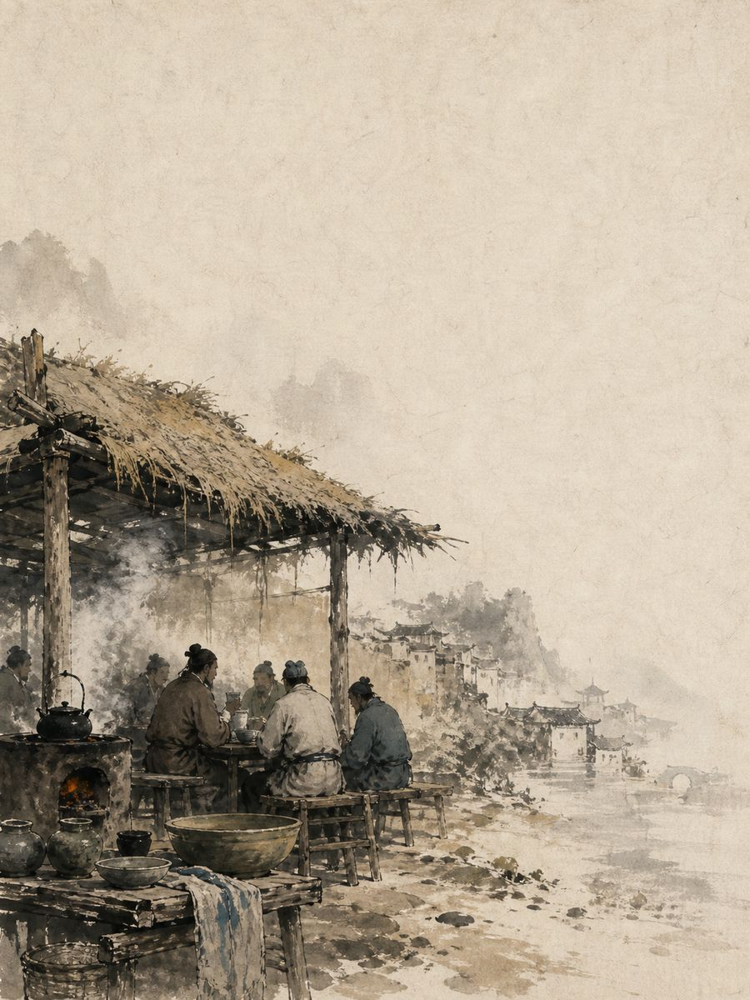
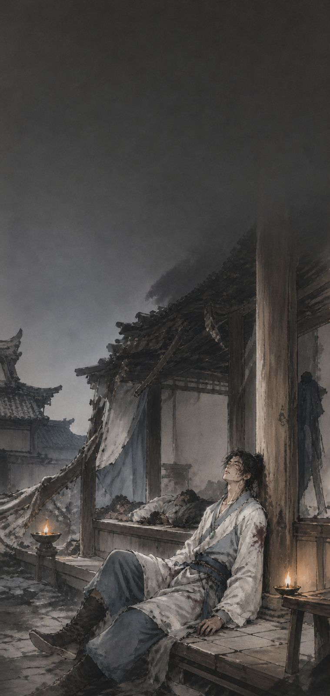
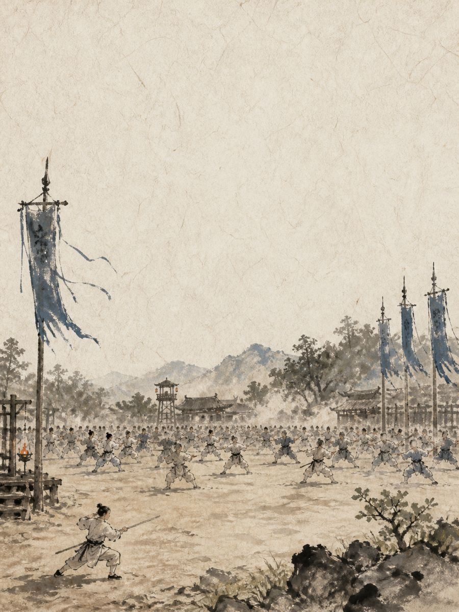
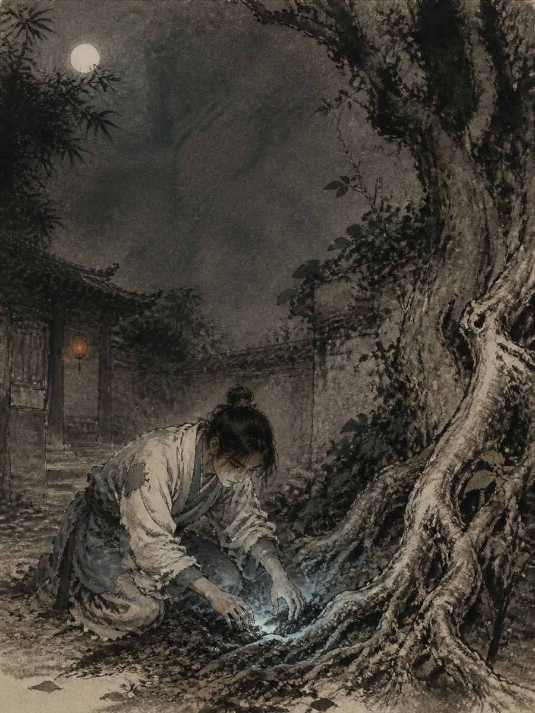
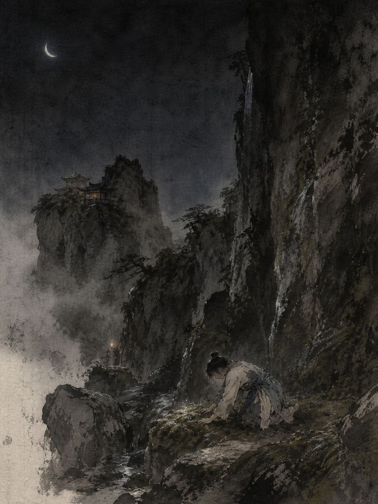
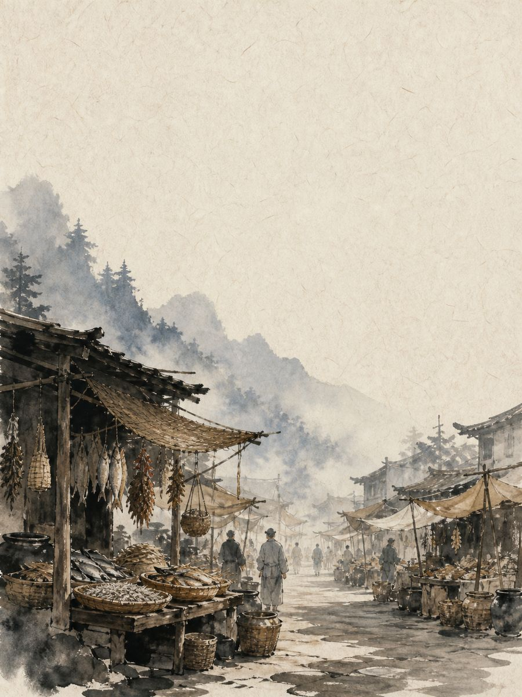
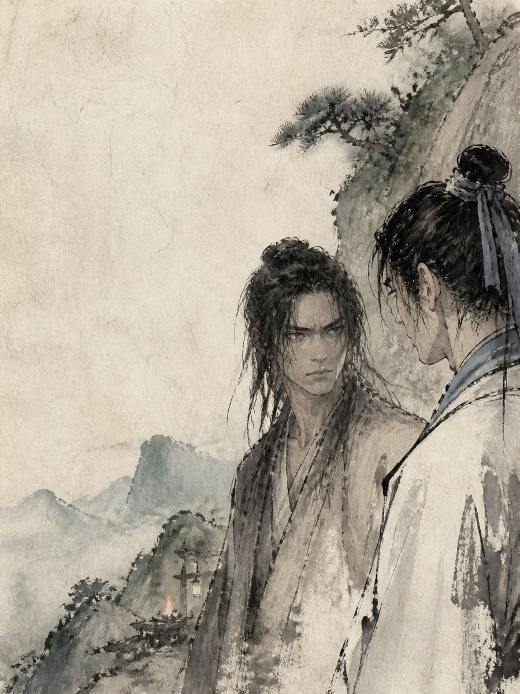
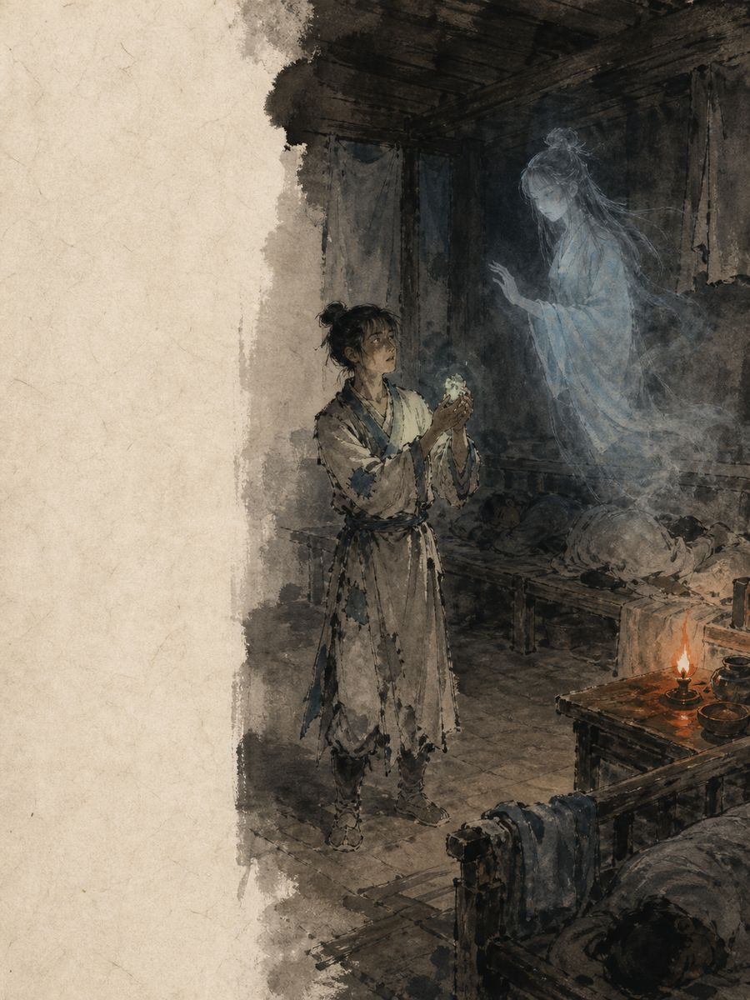
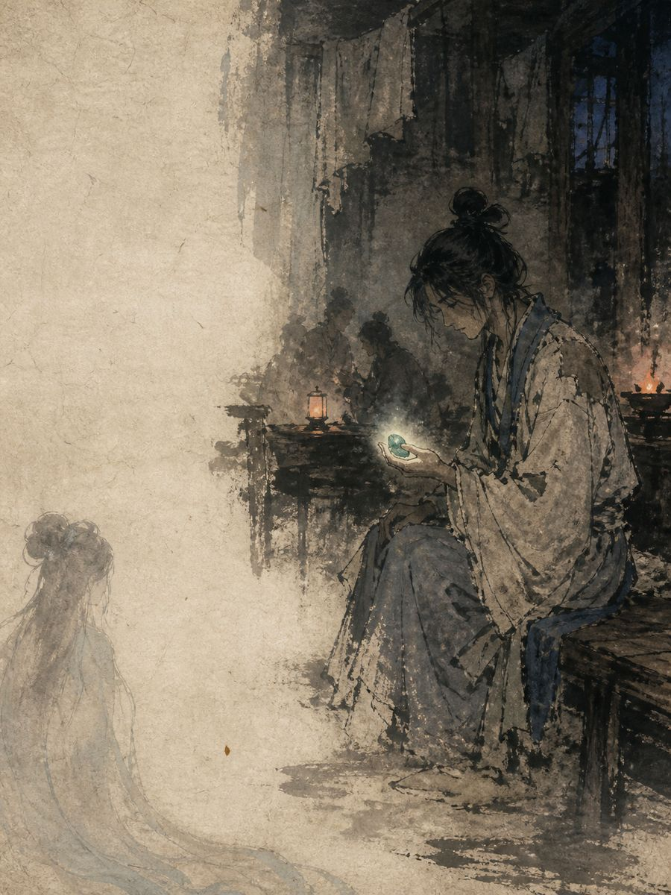
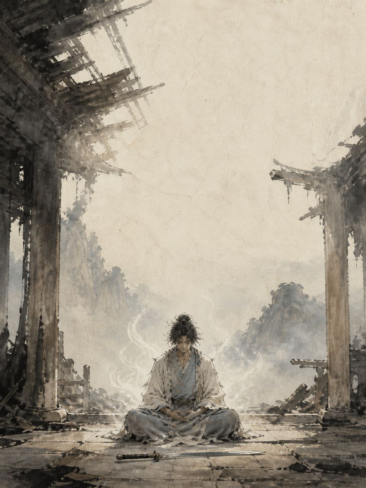

Chương 2 — Tiểu hội Thái Nam Sơn Cốc
Toàn văn cốt truyện · sinh thẳng từ dữ liệu game · đọc trên điện thoại
Mạc Đại Phu chết sau trận Dã Lang Bang. Hàn Lập mang di vật về Mạc phủ ở Gia Nguyên thành, và từ miệng khách viếng nghe được hai chữ 'Thái Nam'. Người chơi theo hắn tới Thái Nam Tiểu Hội — hội chợ tự phát của tán tu, nơi lần đầu chạm mặt giới tu tiên: linh thạch, linh căn, Thăng Tiên Lệnh. Ngày cuối, tà tu phong toả Thái Nam Cốc; Hàn Lập hạ sát Kim Quang Thượng Nhân và đoạt Thăng Tiên Lệnh. Kết chương, hắn đi Hoàng Phong Cốc, còn người chơi đi con đường riêng.
59đoạn
86lựa chọn
2nhánh xuất thân
23ảnh
Hai lối vào
Chương 2 có hai lối vào khác nhau tuỳ xuất thân. Đọc lối vào của mình, rồi đọc tiếp phần mạch chung bên dưới — từ Thái Nam sơn trở đi hai nhánh nhập làm một.
Lối vào — Tán tu (10 đoạn, rồi nhập mạch chung)

Bình minh — Thất Huyền trấn
Trời sáng hẳn. Khói từ những mái nhà cháy đêm qua vẫn vương thành một dải xám mỏng, treo lơ lửng trên nóc chợ.
Ta ngồi trên bậc đá trước cổng trấn, tay ôm cặp kiếm trong vạt áo. Kiếm linh im lặng suốt từ lúc bình minh, đến mức ta phải khẽ gọi hai lần.
“Đừng gọi nữa,” — giọng nó yếu ớt vang lên — “Ta đang nhìn một thứ.”
“Nhìn gì?”
“Gã kia kìa. Hàn Lập.”
Ta ngẩng lên. Giữa đám người đang dọn xác và gánh nước, một bóng áo xám gầy gò lặng lẽ bước về phía đông, sau lưng đeo một cái hòm gỗ nhỏ.
“Hắn đi đâu?”
“Về nhà sư phụ hắn,” — kiếm linh nói — “Mạc Đại Phu. Lão già ấy đêm qua trúng một chưởng, không qua khỏi sáng nay. Xác còn chưa lạnh mà hắn đã lên đường rồi.”
Ta im. Mạc Đại Phu. Ta chưa từng gặp ông lão ấy. Nhưng kiếm linh chưa bao giờ nói về một người phàm với giọng như thế — như thể ông ta là người nó đã chờ từ rất lâu.
“Ngươi muốn ta đi theo hắn.”
“Ta muốn ngươi đi theo hắn,” — kiếm linh đáp, giọng bỗng nghiêm — “Ta đã nói rồi. Hắn sẽ là người quan trọng nhất trong đời ngươi. Và con đường hắn sắp bước vào… không phải con đường võ lâm.”
👁️🗨️ 【Hệ thống】“Nhiệm vụ mới: bám theo Hàn Lập. Phần thưởng: chưa rõ.”
Chọn: “Ngồi thêm chút nữa, nghĩ đã”
Bậc đá trước cổng trấn
Ta ngồi yên, nhìn dải khói mỏng tan dần trong nắng sớm.
Đi theo một kẻ ta mới gặp một lần. Ta nhớ đêm qua — hắn đứng trong góc tối hậu sơn, biết ta bám theo từ đầu mà không hề quay lại. Cái kiểu biết mà không nói ấy không phải kiểu của một tạp dịch bình thường.
“Ngươi do dự,” — kiếm linh nhận xét.
“Ta đang nghĩ.”
“Nghĩ cũng được. Nhưng nghĩ lâu thì người ta đi mất.”
Ta bật cười khẽ. Nó nói đúng. Cả đời ta — cả hai đời ta — đã bỏ lỡ bao nhiêu thứ chỉ vì ngồi nghĩ thêm một chút.
Ta đứng dậy, phủi đất trên vạt áo rách, và bước về phía đông.
Chọn: “Đi theo Hàn Lập” → đoạn đã in ở trên

Đường mòn ra khỏi trấn — sáng
Đường ra khỏi trấn men theo chân núi, hai bên là ruộng bậc thang đã bị giày xéo từ đêm qua. Lúa non nằm rạp, lẫn trong bùn là những vệt đen của máu khô.
Hàn Lập đi trước ta chừng hai mươi bước, bước chân đều và không ngoái lại. Cái hòm gỗ sau lưng hắn kêu kẽo kẹt theo nhịp.
Ta bám theo được một quãng thì hắn rẽ vào một lối nhỏ xuyên qua rừng, khuất sau mấy tảng đá.
Ta chạy theo. Nhưng tới khúc quanh thì chỉ còn con đường trống và tiếng gió lay lá.
“Hắn mất dấu rồi,” — kiếm linh nói.
“Ngươi bảo ta bám theo hắn.”
“Ta bảo ngươi đi theo hắn. Không bảo ngươi bám đuôi hắn như kẻ trộm.” — Nó thở dài, một tiếng thở dài của thanh kiếm nghe rất kỳ. — “Thôi. Ta biết hắn đi đâu. Gia Nguyên thành. Đi thẳng về phía đông, tới khi thấy tường đá.”

Quán nước bên đường — chiều
Ta đi bộ suốt một ngày. Đến chiều thì ghé vào một quán nước tranh tre bên đường, chân rã rời, bụng đói.
Bà chủ quán nhìn bộ dạng ta rồi múc cho một bát nước vối, không lấy tiền.
Bàn bên cạnh có hai gã lái buôn đang nói chuyện. Ta không định nghe, nhưng một cái tên làm tai ta giật lên.
“…tháng này lại có hội ở Thái Nam sơn. Đám buôn chúng bay liệu mà tránh xa.”
“Tránh làm gì? Hội của người tu hành, mình có tới đâu.”
“Nhưng khách của chúng nó thì có. Mấy lão thương nhân trong thành đang gom bạc, đòi mua mấy thứ thuốc lạ. Nghe đâu một viên nhỏ bằng hạt đậu, giá bằng cả cái quán này.”
Gã kia cười khẩy. “Thổi phồng. Toàn lũ lang băm.”
Ta cúi xuống bát nước, tim đập nhanh. Thái Nam. Kiếm linh không nói gì, nhưng ta biết nó cũng đang nghe.

Gia Nguyên thành — cổng tây
Hai ngày nữa, Gia Nguyên thành hiện ra sau khúc quanh của con đường.
Ta chưa từng thấy một tòa thành lớn đến thế. Tường đá cao đến mức phải ngửa cổ mới nhìn hết, cổng thành đóng đinh sắt, người ra kẻ vào nối nhau thành một dòng không dứt.
Lính gác nhìn ta từ đầu đến chân rồi phẩy tay: “Ăn mày thì đi cổng tây.”
Ta không cãi. Ta đi vòng theo chân tường đá, tới cổng tây, lách vào thành qua đám đông đang chen nhau vào chợ.
Trong thành, mọi thứ ồn hơn ta tưởng. Tiếng rao, tiếng xe, tiếng trẻ con, tiếng ai đó đang mắng nhau ngoài chợ vải. Ta đứng giữa dòng người, đột nhiên thấy mình nhỏ đến mức nào.
“Giờ sao?” — ta hỏi khẽ.
“Tìm một cái phủ họ Mạc,” — kiếm linh đáp. — “Ở cuối ngõ Thanh Trúc.”

Ngõ Thanh Trúc — trước cổng Mạc phủ
Ngõ Thanh Trúc yên tĩnh đến mức ta nghe rõ tiếng chân mình.
Cuối ngõ là một cái phủ tường quét vôi trắng, cửa gỗ nâu đã bạc màu. Trước cổng treo hai dải vải trắng — dấu hiệu nhà có tang.
Và đứng trước cổng ấy là Hàn Lập.
Hắn quay lưng về phía ta, vai hơi sụp xuống, cái hòm gỗ đặt dưới chân. Hắn không gõ cửa. Cứ đứng đó.
Ta đứng lại, cách hắn chừng mười bước, không dám lên tiếng.
Rồi hắn nói, không quay đầu: “Ta biết ngươi theo ta từ Thất Huyền trấn.”
“Sao ngươi biết?”
“Vì ngươi đi bộ.” — Hắn quay lại. Đôi mắt ấy vẫn sắc như đêm qua, nhưng quanh mắt có quầng thâm. — “Người đi bộ một mình qua ba ngày đường, tới đây, rồi đứng im trước cổng nhà người khác — không phải kẻ cướp.”
Hắn nhìn ta một lúc. “Ngươi muốn gì?”
“Ta không biết,” — ta đáp thật.
Hắn im rất lâu. Rồi hắn đẩy cửa. “Vào đi. Đừng nói gì cả.”

Mạc phủ — sân trong
Trong sân, người ta đã dựng một gian lều tang trắng. Khói hương quyện với mùi giấy vàng cháy, mùi ấy bám vào cổ họng ta đến khó thở.
Ba người phụ nữ mặc đồ tang ngồi quỳ bên trong. Hai người khóc. Một người thì không.
Hàn Lập quỳ xuống, đặt hòm gỗ lên chiếc bàn thấp trước linh vị.
“Đệ tử Hàn Lập,” — hắn nói, giọng khàn — “Mang di vật của sư phụ về.”
Người phụ nữ không khóc đứng dậy. Bà ta nhìn hắn một lúc lâu, rồi nhìn sang ta — ánh mắt sắc như dao cau.
“Còn ngươi là ai?”
“Bạn của hắn,” — ta đáp.
“Bạn.” — Bà ta nhắc lại, giọng không giấu vẻ khinh. — “Một kẻ ăn mày làm bạn với đệ tử của phụ thân ta. Thời buổi này thật lạ.”
Ta cúi đầu, không đáp. Ta đã nghe câu ấy nhiều lần đến mức nó chẳng còn làm ta đau nữa.
Nhưng Hàn Lập thì khác. Bàn tay đặt trên đầu gối hắn siết lại, và ta thấy hàm hắn nghiến chặt.
👁️🗨️ 【Hệ thống】“Ghi nhận: ngươi đã đứng về phía hắn.”

Mạc phủ — hiên sau, đêm
Đêm ấy, khi khách viếng đã về gần hết, ta ngồi ngoài hiên sau và nghe được từng mảnh câu chuyện qua khung cửa hé.
Giọng người phụ nữ ấy, lạnh và đều: “…phụ thân ta giấu cả nhà suốt ba mươi năm. Ta tưởng ông ấy chỉ là một lang y.”
Rồi giọng một người đàn ông lạ — khách chưa về, ngồi lại uống trà: “Lão Mạc không phải lang y. Lão là người tu hành, chỉ là sa cơ. Các người ở đây không biết, nhưng ở ngoài kia người ta vẫn nhớ tên lão.”
“Vậy ông ta tới đây làm gì?”
“Trốn.” — Tiếng chén trà đặt xuống bàn. — “Và chết.”
Im lặng một lúc. Rồi người đàn ông ấy nói thêm, giọng nhẹ đi:
“Tháng này ở Thái Nam sơn có tiểu hội. Người tu hành bốn phương tụ về đó. Nếu đứa đệ tử kia thật sự muốn biết sư phụ nó là ai… thì đó là chỗ để hỏi.”
Ta ngồi im trong bóng tối, tim đập đến mức nghe rõ trong tai. Thái Nam sơn. Tiểu hội.
👁️🗨️ 【Hệ thống】“Từ khoá mới: Tiểu hội Thái Nam Sơn Cốc.”
Quán nước đầu phố — sáng hôm sau
Sáng hôm sau, Hàn Lập rời Mạc phủ với một cái túi vải nhỏ hơn cái hòm gỗ rất nhiều.
“Bà ta đuổi ngươi?”
“Không.” — Hắn lắc đầu. — “Bà ta đưa ta cái này. Nói là di vật của sư phụ, chia cho ta một phần.”
Hắn mở túi. Bên trong là mấy nén bạc, một cuốn sách mỏng đã ố, và một mảnh ngọc nhỏ xíu màu trắng đục.
“Thái Nam sơn,” — hắn nói, không nhìn ta — “Ngươi biết đường không?”
“Không.”
“Ta cũng không.” — Hắn cất túi đi. — “Nhưng ta sẽ đi. Canh tư sáng mai.”
Ta mở miệng định nói đi cùng. Hắn giơ tay, chặn trước.
“Đừng.” — Hắn nhìn ta. — “Ta cần đi một mình đoạn này. Ta không biết mình sẽ gặp gì ở đó, và ta không muốn kéo ngươi vào chuyện ta chưa hiểu.”
Ta im.
“Nhưng ta sẽ đợi ngươi ở đó,” — hắn nói thêm, giọng bớt lạnh. — “Nếu ngươi tới.”
Đúng lúc ấy, một giọng nói chen vào từ bàn bên cạnh.
“Thái Nam à?”
Một người ngồi ở bàn bên cạnh lên tiếng. Ông ta không quay lại ngay — ông cầm bát nước, uống hết, lau miệng, rồi mới xoay người.
Ông già. Tóc bạc một nửa, nhưng lưng thẳng, tay đặt trên bàn vững như đá. Áo xám, không một món trang sức — chỉ có một cái nhẫn trên ngón út, mòn bóng.
“Ta là Vạn Tiểu Sơn.” — Ông nói, và không đứng dậy, không kéo ghế. — “Ta biết đường. Nhưng câu hỏi không phải là đường.”
Chọn: “Cảnh giác, không nói gì”
Quán nước đầu phố
Ta không đáp. Ở chốn này, kẻ tự nhiên thân thiện thường là kẻ có ý đồ.
Ông già cũng không vì thế mà bớt khó chịu. Ông rót thêm nước, uống một mình, rồi nói với khoảng không:
“Ngoài kia người ta bảo Thái Nam sơn chỉ là chuyện láo. Rằng chẳng có ai tu hành cả, chỉ có mấy gã lang băm bán thuốc giả.” — Ông nhún vai, một động tác nhỏ, như thể chuyện đó chẳng đáng để ông bận lòng. — “Ta thì ta biết đó là thật. Vì ta đã tới đó ba lần.”
Hàn Lập ngẩng lên. “Ba lần?”
“Ba lần.” — Vạn Tiểu Sơn đặt bát xuống. — “Lần đầu ta tới đó thì trong tay ta có mười bảy viên linh thạch. Lần thứ hai, ta có một trăm hai mươi. Lần này thì ta có đủ để mua thứ ta cần.” — Ông nhìn Hàn Lập. — “Ngươi thì có mấy viên?”
Hàn Lập im.
“Ta hỏi vì ta cần biết.” — Ông nói, giọng không có chút gì là đùa. — “Vì cái hội này không phải chỗ cho kẻ không có gì. Ta đã thấy người ta chết ở đây vì đi nhầm dãy hàng. Lần đầu ngươi tới, phải không?”
Hàn Lập gật đầu.
“Vậy thì nghe.” — Ông hạ giọng. — “Đi theo ta một đoạn. Ta không làm không công — ba viên. Nhưng ta sẽ không để ngươi chết ngu trong hai ngày đầu.”
👁️🗨️ 【Hệ thống】“Vạn Tiểu Sơn — tán tu, Luyện Khí tầng tám. Kiêu ngạo, thực dụng, không giả vờ tử tế.”
Chọn: “Lắc đầu, nghe tiếp” → đoạn đã in ở trên

Quán nước đầu phố — Vạn Tiểu Sơn
“Linh thạch,” — Vạn Tiểu Sơn nói, giọng như đang giảng bài cho học trò kém — “là thứ tiền của người tu hành. Không phải bạc, không phải vàng. Một viên linh thạch hạ phẩm bằng cả một căn nhà ở Gia Nguyên này.”
Ta bật cười. “Ngươi đùa.”
Ông nhìn ta. Ánh mắt ấy làm ta thôi cười ngay.
“Ta không đùa về tiền,” — ông nói. — “Và ta không đùa với kẻ cười khi ta đang nói. Ngươi muốn học thì học. Không muốn thì đi.”
“Ta xin lỗi.”
“Đừng xin lỗi. Xin lỗi không đổi được gì.” — Ông rót nước, chậm. — “Ở Thái Nam sơn, người ta không mua bán bằng bạc. Họ đổi linh thạch lấy đan dược, lấy pháp khí, lấy sách công pháp. Và ai không có linh thạch thì đứng ngoài nhìn. Cả đời đứng ngoài nhìn.”
“Còn ngươi?”
“Ta có.” — Ông không nói con số. — “Và ta biết chỗ đứng. Biết ai nên tránh. Đó là tất cả những gì một tán tu có sau hai mươi năm.”
Hàn Lập im lặng một lúc, rồi hỏi câu ta cũng đang muốn hỏi: “Làm sao ngươi biết những chuyện này?”
“Vì ta đã từng là kẻ đứng ngoài nhìn,” — Vạn Tiểu Sơn đáp, và lần đầu tiên giọng ông bớt cái vẻ khó chịu — “Suốt bốn năm. Ta đứng trước cửa một tông môn, chờ người ta đo linh căn cho. Bốn năm. Rồi người ta đo, và bảo ta tứ linh căn, tạp dịch, về đi.”
Ông đứng dậy, chỉnh lại vạt áo.
“Ta không về. Ta đi đường khác.” — Ông nhìn Hàn Lập. — “Sáng mai, cổng đông. Ta đợi. Ai tới thì đi. Ai không tới thì ta không nhớ.”
👁️🗨️ 【Hệ thống】“Từ khoá: con đường của tán tu — không có linh căn tốt thì đi đường khác.”
Đường lên Thái Nam sơn
Hai người, hai con ngựa thuê — thứ xa xỉ nhất ta từng tiêu trong đời. Vạn Tiểu Sơn trả tiền và không cho ta hỏi vì sao.
Đường lên Thái Nam sơn khác hẳn đường phàm. Càng lên cao, cây cối càng lạ: lá cây óng ánh như phủ một lớp sương mỏng không tan, đá dưới chân ấm dần lên dù trời lạnh.
“Đừng chạm vào gì cả,” — Vạn Tiểu Sơn dặn, giọng không còn đùa — “Có thứ ở đây ăn người đấy.”
“Ăn người?”
“Yêu thú.” — Hắn nói gọn. — “Chúng không tấn công đoàn đông. Đi lẻ là chết.”
Ta nghĩ tới Hàn Lập, đi một mình, ba ngày trước. Ta không nói ra.
Đến chiều ngày thứ ba, núi tách ra thành một cái cốc rộng. Từ trên cao, ta nhìn thấy nó: một thung lũng đầy lều trại, đèn lồng treo khắp nơi dù trời chưa tối, và một dòng người dài không dứt đang đổ vào.
“Thái Nam Sơn Cốc,” — Vạn Tiểu Sơn nói, và giọng hắn có gì đó rất lạ — “Đến rồi.”
Hắn dừng ngựa, rồi nói thêm, không nhìn ta: “Từ đây ta đi một mình. Ta có việc riêng ở đây.”
“Việc gì?”
“Việc bốn năm trước ta chưa làm xong.” — Hắn cười, nhưng cái cười ấy không tới mắt. — “Nếu cần ta, ta ở dãy hàng phía tây. Quầy bán bùa.”
Hắn đi. Ta đứng một mình ở mép thung lũng.
👁️🗨️ 【Hệ thống】“Đã tới: Thái Nam Sơn Cốc.”
Chọn: “Xuống thung lũng” → đoạn đã in ở trên
Lối vào — Môn phái (6 đoạn, rồi nhập mạch chung)

Tân xá — sáng, sau trận
Ta tỉnh dậy trên tấm phản gỗ quen thuộc, người đau như bị ai đánh một trận. Có lẽ đúng là vậy.
Ánh sáng lọt qua khe cửa sổ rách, rơi thành một vệt dài trên nền đất. Bên ngoài, tiếng người vẫn ồn — tiếng khiêng gỗ, tiếng gọi nhau dọn dẹp, tiếng ai đó khóc rất khẽ rồi nín.
Trong vạt áo, khối ngọc cốt ấm lên.
“Tỉnh rồi,” — Tuyết Cơ nói, giọng đã đỡ yếu hơn đêm qua — “Ngươi ngủ hai ngày.”
“Hai ngày?”
“Đêm ấy ngươi dùng quá nhiều linh lực.” — Nàng ngừng một chút. — “Và có chuyện ngươi cần biết. Mạc Đại Phu đã mất.”
Ta ngồi bật dậy, đầu choáng váng.
“Mất?”
“Trúng một chưởng ở cổng đông. Lão cố cầm cự tới sáng, rồi đi.” — Giọng nàng chậm lại. — “Nhưng trước khi đi, lão có nói một câu. Người ta kể lại rằng lão bảo đệ tử mình: đừng ở lại đây. Đi về phía nam.”
👁️🗨️ 【Hệ thống】“Tin buồn: Mạc Đại Phu đã mất.”
Chọn: “Ngồi lại, hỏi Tuyết Cơ cho rõ”

Tân xá — trong phòng
Ta ngồi lại trên phản, hai tay ôm lấy đầu gối.
“Mạc Đại Phu là ai?”
“Một lang y.” — Tuyết Cơ im một lúc. — “Hoặc không phải. Ta chỉ là một phân thân bị nhốt trong ngọc, ta không nhìn thấy mọi thứ. Nhưng đêm ấy, khi lão đi ngang qua ngươi, ta ngửi thấy một mùi rất lạ.”
“Mùi gì?”
“Mùi của người đã từng hút linh khí.” — Nàng nói chậm. — “Không nhiều. Nhưng đủ. Lão không phải người thường, dù lão sống như người thường suốt ba mươi năm.”
Ta nhớ lại vườn thuốc, ông lão áo xám ngồi bó thuốc, đôi mắt già nua mà sáng lạ thường. Ta đã đứng cạnh một người như thế mà không biết.
“Vậy là trên đời này không chỉ có mình ta giấu chuyện.”
“Không chỉ mình ngươi.” — Giọng nàng có chút gì đó gần như dịu lại. — “Và đó là lý do ngươi nên ra ngoài. Ở chốn này, ai giấu mình cũng có lý do. Ngươi cần biết lý do của họ trước khi họ biết lý do của ngươi.”
Chọn: “Ra ngoài” → đoạn đã in ở trên

Sân tập — trưa, sau trận
Sân tập giờ là một bãi đất lộn xộn. Một nửa mái che đã sập, cột cờ gãy làm đôi, và ở góc sân người ta đang dựng một dãy giường tre để kê người bị thương.
Các đệ tử đi lại như những cái bóng. Không ai nói to. Không ai cười.
Ta thấy Hàn Lập đứng ở rìa sân, bên cạnh một cái cáng phủ vải trắng. Hắn không khóc. Hắn chỉ đứng đó, hai tay buông thõng, nhìn xuống.
Ta tới gần. Hắn không quay lại, nhưng biết ta ở đó.
“Sư phụ ta,” — hắn nói, giọng đều đến lạ — “Người ta bảo ông ấy là lang y. Nhưng ta biết ông ấy không phải.”
Ta không đáp.
“Ông ấy dạy ta một bộ công pháp,” — hắn nói tiếp, rất khẽ — “Trường Xuân Công. Ông bảo đừng nói với ai. Ta giữ kín ba năm. Giờ ông ấy chết rồi, mà ta vẫn chưa dám nói với ai.”
Hắn quay sang ta. Đôi mắt ấy sắc, và ướt.
“Vì sao ta lại nói với ngươi?”

Sân tập — chiều muộn
Hàn Lập ngồi xuống bậc đá, ta ngồi cạnh.
“Trước khi mất, ông ấy dặn ta một câu,” — hắn nói — “Đừng ở lại đây. Đi về phía nam. Tới Thái Nam sơn.”
“Thái Nam sơn là chỗ nào?”
“Ta không biết.” — Hắn lắc đầu. — “Ông ấy chỉ nói: ở đó có một cuộc họp của người tu hành. Tiểu hội Thái Nam Sơn Cốc. Và ông bảo ta mang theo cuốn sách ông để lại.”
Hắn mở túi vải, lấy ra một cuốn sách mỏng đã ố vàng, bìa không có chữ.
“Trường Xuân Công?”
“Không phải.” — Hắn lật vài trang. — “Cuốn kia ta đã học thuộc rồi. Cuốn này… ta không đọc được. Chữ lạ.”
Ta nhìn vào trang giấy. Những nét chữ mảnh, đều, xa lạ — không phải chữ của người phàm.
“Ta đọc được,” — Tuyết Cơ bỗng nói trong đầu ta, giọng căng thẳng — “Và ngươi nên biết: cuốn sách này không phải của một lang y. Đây là sổ tay của một kẻ đã từng giết người vì nó.”
👁️🗨️ 【Hệ thống】“Vật phẩm mới: Sổ tay Mạc Đại Phu (chưa đọc).”
Cổng môn — sáng hôm sau
Hàn Lập đi từ lúc trời chưa sáng.
Ta ra tới cổng môn thì chỉ còn cái bóng áo xám nhỏ dần trên đường mòn phía nam, sau lưng là cái hòm gỗ.
“Hắn không đợi ngươi,” — Tuyết Cơ nói.
“Ta biết.”
“Ngươi có giận không?”
Ta nghĩ một lúc. “Không. Hắn quen đi một mình rồi.”
Ta đứng ở cổng môn, nhìn bóng ấy khuất sau khúc quanh. Rồi ta quay vào, thu xếp túi áo — mấy nén bạc, khối ngọc cốt, và một tấm bản đồ cũ ta mượn được ở phòng quản sự.
Ta cũng đi về phía nam. Nhưng ta đi đường khác.
Nếu hắn đã quen đi một mình, ta nghĩ, thì ta sẽ tới đó trước hắn.
👁️🗨️ 【Hệ thống】“Hành trình mới: Thái Nam sơn.”
Quán nước bên đường — trưa
Ta đi bộ hai ngày, ngủ nhờ trong những cái miếu ven đường. Đến trưa ngày thứ ba thì ghé quán nước.
Quán đông hơn ta tưởng. Một bàn có ba gã đàn ông ăn mặc khá giả, nói chuyện to. Ta ngồi bàn góc, gọi bát nước, nghe lỏm.
“Tháng này hội mở sớm hơn mọi năm,” — một gã nói — “Nghe đâu có chuyện lớn.”
“Chuyện gì?”
“Không rõ. Nhưng mấy nhà buôn trong thành đang gom hàng. Có người bỏ cả gia sản ra mua một viên thuốc nhỏ xíu.”
Gã thứ ba hạ giọng: “Nghe nói hội này có cả người của tông môn lớn tới. Không phải hạng lang băm đâu.”
Ta cúi xuống bát nước. Tông môn. Chữ ấy ta nghe mỗi ngày — từ miệng quản sự, từ bảng treo trước sân tập Thất Huyền Môn. Chỉ là ở đó, nó nghĩa là một sân võ, một đám người phàm luyện quyền.
Còn ở đây, nó được nói bằng một giọng khác. Như thể nói tới một thứ đứng trên tất cả những gì ta từng biết.
“Ngươi đang nghĩ đúng đấy,” — Tuyết Cơ nói. — “Thái Nam sơn. Đó là chỗ ta từng nghe tên, rất lâu rồi.”
“Nơi đó có gì?”
“Một cái chợ.” — Nàng ngừng. — “Và những thứ mà người phàm không được nhìn thấy.”

Chân núi Thái Nam — chiều ngày thứ tư
Đến chiều ngày thứ tư mới tới chân núi Thái Nam. Hai ngày đường, một ngày nghỉ vì trời mưa, và một buổi sáng lạc đường trong rừng thông.
Chân núi Thái Nam khác hẳn chân núi Thất Huyền.
Đất ở đây ấm. Không phải ấm vì nắng — trời đang râm — mà ấm từ dưới lên, như có ai đốt lửa trong lòng đất. Cây cối thì lạ: lá óng ánh như phủ sương mỏng không tan, và có những vệt sáng nhỏ bay lơ lửng trong không khí như đom đóm ban ngày.
Ta đưa tay ra. Một vệt sáng chạm vào đầu ngón tay, rồi tan.
“Linh khí,” — Tuyết Cơ nói, giọng có chút gì đó gần như xúc động — “Ta chưa thấy linh khí đậm thế này từ khi còn sống.”
“Đậm là tốt hay xấu?”
“Với ngươi thì tốt. Ngươi hấp thu linh khí nhanh gấp mấy lần người thường.” — Nàng ngừng. — “Nhưng cũng có nghĩa là ở đây có nhiều kẻ mạnh hơn ngươi rất nhiều. Đi cẩn thận.”
Trước mặt ta, con đường mòn tách ra làm hai. Một nhánh đi lên theo sườn núi, một nhánh vòng xuống thung lũng.
Ta chọn nhánh vòng xuống. Và khi qua khúc quanh, ta thấy nó.
Một thung lũng đầy lều trại, đèn lồng treo khắp nơi, người đi lại như mắc cửi.
👁️🗨️ 【Hệ thống】“Đã tới: Thái Nam Sơn Cốc.”
Chọn: “Xuống thung lũng” → đoạn đã in ở trên
Mạch chung
Từ đây hai nhánh đi cùng một đường: tới Thái Nam sơn, xuống hội chợ, rồi tới ngày cuối.
Thái Nam Sơn Cốc — mép thung lũng
Ta đứng ở mép thung lũng, và lần đầu tiên trong đời, ta thấy người ta bay.
Không phải nhảy cao. Không phải đu dây. Bay. Một người áo trắng đứng trên một thanh kiếm mảnh, lơ lửng cách mặt đất chừng ba trượng, rồi hạ xuống nhẹ như lá rụng.
Ta đứng im rất lâu.
Phía dưới, thung lũng trải ra như một cái chợ khổng lồ: hàng trăm lều trại dựng san sát, đèn lồng treo thành dãy, và ở giữa là một khoảng trống lớn nơi người ta bày hàng trên những tấm vải trải đất.
Nhưng cái làm ta nghẹn thở không phải cái chợ. Mà là những vệt sáng.
Chúng bay lơ lửng khắp nơi, hàng nghìn vệt nhỏ, như đom đóm ban ngày. Người ta đi xuyên qua chúng như đi xuyên qua sương.
Ta đưa tay ra. Một vệt sáng chạm vào đầu ngón tay, rồi tan.
Và trong ngực ta, có một thứ khẽ động đậy — như thể nó vừa nhận ra chỗ này.
👁️🗨️ 【Hệ thống】“Mật độ linh khí: cao gấp bốn mươi lần Thất Huyền trấn.”
Chợ trong thung lũng — chiều
Cái chợ này không giống bất kỳ cái chợ nào ta từng biết.
Không ai rao. Không ai mặc cả to tiếng. Người ta ngồi sau tấm vải, hàng hoá bày trước mặt, và khi có khách thì nói rất khẽ — khẽ đến mức ta phải đứng gần mới nghe được.
Ta đi dọc một dãy hàng. Ở đây bán thứ ta không hiểu: một cái bình nhỏ xíu mà người bán nói bên trong chứa được “một gian nhà”; một tấm bùa giấy vàng vẽ nét run rẩy; một viên đá tròn màu xanh đục, đặt trên một miếng nhung.
Ta dừng lại trước viên đá ấy.
“Cái này bao nhiêu?” — ta hỏi.
Người bán — một bà lão tóc bạc, mắt lim dim — mở mắt nhìn ta từ đầu đến chân. Rồi bà ta cười. Một tiếng cười rất khẽ, rất ngắn, và trong đó có đủ thứ ta không muốn nghe.
“Bạc à?” — bà ta nói, như đang hỏi một đứa trẻ. — “Đây là linh thạch hạ phẩm. Một viên. Ngươi có linh thạch không?”
“Ta có bạc.”
“Bạc thì về chợ Gia Nguyên mà mua rau.”
Mấy người quanh đó quay lại nhìn. Không ai cười to. Nhưng ta thấy rõ ánh mắt họ — cái ánh mắt ta đã gặp cả đời, chỉ khác là lần này nó lạnh hơn.
Ta cúi đầu, lùi ra khỏi dãy hàng.
👁️🗨️ 【Hệ thống】“Ghi nhận: bạc không có giá trị ở đây.”
Chọn: “Ngồi xuống bên lề, quan sát”
Lề chợ — chiều muộn
Ta ngồi xuống bên lề, lưng tựa vào một tảng đá, và học bằng cách nhìn.
Ba điều trong nửa canh giờ.
Một: người ta trả giá bằng những viên đá xanh nhỏ. Một viên đổi được một bình thuốc. Ba viên đổi được một thanh kiếm. Mười viên thì ta không dám đoán.
Hai: có những người không ai dám tới gần. Họ mặc áo cùng một màu, đi thành nhóm, và khi họ tới gần thì người bán tự động cúi đầu.
Ba: có những người như ta — đi vòng quanh, nhìn, không mua gì, và bị nhìn bằng ánh mắt giống hệt nhau.
Ta đếm được bảy người như thế trong nửa canh giờ. Bảy người, trong một cái chợ có lẽ hàng nghìn người.
Đây là lần đầu ta thấy mình không phải kẻ thấp nhất, ta nghĩ. Mà là một trong rất nhiều kẻ thấp nhất.
Ta nhớ lại những đêm luyện một mình ở Thất Huyền trấn, sợ có tiếng động, sợ có người đi qua. Hoá ra cả một vùng đất rộng lớn này đầy những kẻ cũng phải giấu mình như ta.
👁️🗨️ 【Hệ thống】“Quan sát: phân tầng rõ rệt. Kẻ có linh thạch, kẻ không.”
Chọn: “Đứng dậy, đi tiếp” → đoạn đã in ở trên

Dãy hàng phía đông — chạng vạng
Ta thấy Hàn Lập trước khi hắn thấy ta.
Hắn ngồi sau một tấm vải nhỏ ở dãy hàng phía đông, trước mặt bày mấy thứ: một cuốn sách ố, mấy lọ thuốc, và một mảnh ngọc trắng đục. Di vật của Mạc Đại Phu.
Một gã đàn ông mặc áo gấm đứng trước tấm vải, cầm cuốn sách lên lật vài trang rồi ném trả lại.
“Rác,” — gã nói. — “Công pháp phàm nhân. Ở đây ai thèm.”
“Đây là sách của sư phụ ta.”
“Sư phụ ngươi là ai?”
Hàn Lập im.
“Không biết à?” — Gã cười, rồi chỉ vào mảnh ngọc. — “Cái này thì được. Ta cho ngươi hai viên hạ phẩm.”
Ta thấy vai Hàn Lập cứng lại. Hai viên. Ta vừa học được rằng ở đây, hai viên là giá của một kẻ không biết gì.
Hắn không biết. Hắn đang định gật đầu.
👁️🗨️ 【Hệ thống】“Cơ hội: can thiệp, hoặc đứng nhìn.”
Chọn: “Đứng nhìn, để hắn tự quyết”

Dãy hàng phía đông
Ta đứng nhìn.
Hàn Lập cầm mảnh ngọc lên, nhìn nó một lúc, rồi đặt xuống.
“Không bán.”
Gã áo gấm nhướng mày. “Hai viên là giá tốt cho kẻ như ngươi.”
“Ta biết.” — Hàn Lập nói, giọng đều — “Nhưng ta không biết nó là gì. Và ta không bán thứ ta không biết giá.”
Gã nhìn hắn một lúc, rồi nhún vai bỏ đi. “Tuỳ. Đến mai ta vẫn ở đây.”
Khi gã đi khuất, Hàn Lập mới quay sang ta — không ngạc nhiên, như thể hắn biết ta đứng đó từ đầu.
“Ngươi đứng nhìn nãy giờ.”
“Ta muốn xem ngươi làm gì.”
“Và ngươi thấy gì?”
“Ta thấy một kẻ không bán thứ mình không hiểu.” — Ta ngồi xuống cạnh hắn. — “Đó là điều tốt. Nhưng ngươi vẫn chưa biết nó là gì.”
Hắn im một lúc. Rồi hắn đưa mảnh ngọc cho ta.
“Vậy thì cùng tìm hiểu.”
👁️🗨️ 【Hệ thống】“Hảo cảm Hàn Lập +8.”
Chọn: “Cầm mảnh ngọc lên xem” → đoạn đã in ở trên
Dãy hàng phía đông
Ta bước tới, đứng chắn giữa gã áo gấm và tấm vải.
“Mảnh ngọc ấy,” — ta nói, giọng bình thản đến mức chính ta cũng ngạc nhiên — “không phải ngọc thường. Ngươi thử cầm nó dưới nắng xem.”
Gã áo gấm nhíu mày. Nhưng gã vẫn làm — giơ mảnh ngọc lên.
Ánh hoàng hôn xuyên qua. Và trong lòng mảnh ngọc, một vệt sáng đỏ thẫm hiện ra, chậm rãi xoay như máu đang chảy.
Mặt gã đổi màu.
“Cái này… đây là huyết ngọc?”
“Ta không biết nó là gì,” — ta nói thật — “Nhưng ta biết hai viên hạ phẩm là giá của kẻ không biết nó là gì.”
Gã nhìn ta rất lâu. Rồi gã cười — lần này cười thật.
“Ngươi là ai?”
“Không ai cả.”
“Không ai cả mà dám phá ngang việc của ta.” — Gã ném xuống tấm vải một cái túi nhỏ. — “Mười viên. Giá thật. Vì ta thích kẻ dám nói.”
Gã đi. Ta quay lại, và thấy Hàn Lập đang nhìn ta — lần đầu tiên, nhìn thẳng, không giấu gì.
“Vì sao ngươi giúp ta?”
“Vì ta đã từng bị trả giá hai viên,” — ta đáp.
👁️🗨️ 【Hệ thống】“Hảo cảm Hàn Lập +15. Nhận: 10 linh thạch hạ phẩm.”
Góc chợ — tối
Đèn lồng trong thung lũng thắp lên cùng một lúc, và cái chợ đổi hẳn màu.
Ta ngồi cạnh Hàn Lập trên một tảng đá, giữa hai dãy hàng đã bắt đầu dọn. Trong tay hắn là cuốn sách ố.
“Ta đọc được chữ này,” — cái thứ trong vạt áo ta bỗng lên tiếng, giọng căng — “Nhưng ngươi phải hứa: đừng để hắn biết ngươi có ta.”
“Vì sao?”
“Vì cuốn sách này viết về một thứ mà chỉ kẻ đã từng giết người vì nó mới biết. Nếu hắn biết ta đọc được, hắn sẽ biết ta là ai. Và ta chưa muốn hắn biết.”
Ta nhìn Hàn Lập. Hắn đang cúi xuống trang giấy, mày nhíu lại, cố đọc những nét chữ mình không hiểu.
“Nó viết gì?” — ta hỏi.
“Ta không biết.” — Hắn đẩy sách sang. — “Ngươi thử xem.”
Ta cầm lấy. Những nét chữ mảnh, đều, xa lạ. Ta không đọc được gì cả.
Nhưng cái thứ trong vạt áo ta thì đọc được, và nó đọc cho ta nghe — rất khẽ, rất chậm, như sợ chính mình nghe thấy.
“Đây là sổ tay của một kẻ tên Mạc Cư Nhân. Nó ghi về một chuyến đi tới Thái Nam sơn, bốn mươi năm trước. Và nó ghi về một thứ ông ta tìm thấy ở đây — rồi phải bỏ chạy.”
Ta ngẩng lên.
“Chạy khỏi cái gì?”
“Không ghi.” — Nó ngừng. — “Trang cuối bị xé.”
Chọn: “Giấu, chưa nói”

Góc chợ — tối
Ta đặt cuốn sách xuống.
“Ta không đọc được.”
Đó là lần đầu ta nói dối hắn. Câu dối trôi ra khỏi miệng ta dễ đến mức chính ta cũng thấy lạnh.
Hàn Lập nhìn ta một lúc. Hắn không nói gì, nhưng ta biết hắn biết.
“Được,” — hắn nói cuối cùng, và cất sách đi. — “Khi nào ngươi đọc được thì nói.”
Hắn đứng dậy, phủi đất trên vạt áo. “Mai ta đi tìm chỗ nghỉ. Ngươi đi không?”
“Đi.”
Chúng ta đi về phía tây thung lũng, và suốt quãng đường không ai nói gì.
Ta sẽ nói với hắn, ta tự nhủ. Chỉ là chưa phải lúc.
Nhưng trong lòng ta có một chỗ lạnh, biết rằng cái “chưa phải lúc” ấy rất dễ kéo dài thành “không bao giờ”.
👁️🗨️ 【Hệ thống】“Ghi nhận: ngươi đã giấu Hàn Lập một chuyện.”
Chọn: “Đi theo hắn” → đoạn đã in ở trên
Chọn: “Đi theo hắn, và vẫn không nói” → đoạn đã in ở trên

Góc chợ — tối
“Ta đọc được,” — ta nói.
Hàn Lập ngẩng lên, mắt sắc lại.
“Ngươi đọc được chữ này?”
“Không phải ta.” — Ta ngừng một nhịp, chọn lời. — “Ta có một thứ giúp ta đọc. Ta chưa thể nói là gì. Nhưng ta không muốn giấu ngươi chuyện này, vì ngươi đã không giấu ta chuyện Trường Xuân Công.”
Hắn nhìn ta rất lâu. Rồi hắn gật đầu, chậm.
“Được. Ngươi đọc đi.”
Ta đọc cho hắn nghe những gì đọc được. Về Mạc Cư Nhân. Về chuyến đi bốn mươi năm trước. Về thứ ông ta tìm thấy rồi bỏ chạy.
Khi ta dứt lời, Hàn Lập im lặng rất lâu.
“Vậy là sư phụ ta không phải lang y,” — hắn nói cuối cùng. — “Và ông ấy chết không phải vì một chưởng ở cổng đông.”
“Ngươi nghĩ vậy?”
“Ta nghĩ,” — hắn nói, và giọng hắn lạnh đi — “rằng có người đã đợi bốn mươi năm để giết ông ấy.”
👁️🗨️ 【Hệ thống】“Hảo cảm Hàn Lập +10. Mở: mối nghi về cái chết của Mạc Đại Phu.”

Rìa thung lũng — đêm
Đêm ấy ta ngủ ngoài trời, dưới một gờ đá, cách chỗ Hàn Lập nghỉ chừng hai mươi bước.
Thung lũng ban đêm khác hẳn ban ngày. Đèn lồng tắt dần, và những vệt linh khí trở nên rõ hơn — chúng bay chậm, như bụi trong ánh nắng, và một vài vệt chạm vào người ta rồi tan đi.
Ta đưa tay ra, để chúng chạm vào.
Rồi ta ngồi thẳng, nhắm mắt, và làm theo cách ta vẫn làm mỗi đêm từ bốn ngày trước. Hơi thở chậm lại. Những vệt sáng tụ về phía ta, chậm rồi nhanh, chui vào da thịt như nước thấm vào đất khô.
Đau. Rồi mát. Rồi ấm.
Khi ta mở mắt, trời đã gần sáng, và trong ngực ta có một thứ nặng hơn hôm qua — không phải nặng khó chịu, mà là cái nặng của một bình đã được rót thêm nước.
👁️🗨️ 【Hệ thống】“Một đêm ở đây bằng một tháng ở Thất Huyền trấn.”
Giữa thung lũng — sáng sớm
Sáng hôm sau, giữa thung lũng có một đám đông tụ lại.
Ta tới gần. Ở giữa đám đông là một cái bục đá thấp, và trên bục là một ông lão mặc áo xám dài, tóc bạc buộc gọn, tay chống một cây gậy gỗ trơn nhẵn.
“Ta là người coi cốc này,” — ông nói, giọng không to mà ai cũng nghe rõ — “Các ngươi tụ về đây mua bán, ta không cấm. Nhưng có ba điều.”
Ông giơ một ngón tay.
“Một: không giết người trong cốc. Kẻ giết người, ta giết lại.”
Ngón thứ hai.
“Hai: không cướp. Kẻ cướp, ta chặt tay.”
Ngón thứ ba.
“Ba: hội này mở bảy ngày. Hết bảy ngày, tất cả phải đi. Ai ở lại quá hạn, ta không chịu trách nhiệm.”
Ông hạ tay, nhìn quanh một lượt. “Các ngươi tới đây vì các ngươi muốn một cái gì đó. Ta không cần biết là gì. Nhưng nhớ: cái giá của thứ các ngươi muốn, thường không phải là thứ các ngươi nghĩ.”
Đám đông im phăng phắc. Rồi ông lão bước xuống bục, và đám đông tản ra như nước.
👁️🗨️ 【Hệ thống】“Luật của cốc: không giết, không cướp, bảy ngày.”
Chọn: “Đi theo ông lão”
Sau bục đá — sáng
Ta đi theo ông lão.
Ông không quay lại, nhưng tới khúc quanh thì dừng: “Đi theo ta làm gì?”
“Ta muốn hỏi một chuyện.”
“Hỏi.”
Ta nghĩ rất nhanh. “Làm sao để có linh thạch, khi trong túi chỉ có bạc?”
Ông lão quay lại. Đôi mắt ông không sắc như ta tưởng — chúng mệt mỏi, và có gì đó gần như thương hại.
“Ngươi tu hành bao lâu rồi?”
Câu hỏi làm ta khựng lại. Ta chưa từng nói với ai.
“Bốn ngày,” — ta đáp.
“Bốn ngày.” — Ông không cười. — “Và ngươi đã tới đây. Ngươi biết mình đang đứng ở đâu không?”
“Không.”
“Ngươi đang đứng ở chỗ mà kẻ tu hành cả đời cũng không dám tới, vì họ không có gì để đổi.” — Ông nhìn ta. — “Có ba cách để một kẻ không có gì có được linh thạch. Một: bán thứ người khác muốn. Hai: làm việc người khác không muốn làm. Ba: tìm một kẻ nhận ngươi làm đồ đệ.”
“Cách nào dễ nhất?”
“Cách thứ hai.” — Ông bước đi. — “Và cách ấy sẽ giết ngươi, nếu ngươi không may mắn.”
Rồi ông nói thêm, không quay lại: “Nhưng ngươi đã hỏi đúng câu. Phần lớn kẻ tới đây không hỏi gì cả. Họ chỉ nhìn, rồi về.”
👁️🗨️ 【Hệ thống】“Kiến thức mới: ba con đường có linh thạch.”
Chọn: “Đi tìm Hàn Lập” → đoạn đã in ở trên
Dãy hàng phía bắc — trưa
Ta tìm thấy Hàn Lập ở dãy hàng phía bắc, trước một quầy bán đan dược.
Hắn đang nói chuyện với một người đàn bà trung niên, mặt lạnh, tay cầm một cái cân nhỏ. Trước mặt họ là mấy lọ thuốc của Mạc Đại Phu.
“Thuốc này là thuốc phàm,” — người đàn bà nói — “Không có linh khí. Nhưng công dụng thì thật. Ta cho ngươi một viên hạ phẩm cho cả mẻ.”
“Một viên?”
“Một viên. Hoặc ngươi mang về.”
Hàn Lập im. Ta thấy tay hắn nắm lại rồi mở ra.
“Được,” — hắn nói.
Ta bước tới. “Khoan.”
Người đàn bà nhìn ta. “Ngươi là ai?”
“Người biết giá.” — Ta chỉ vào mấy lọ thuốc. — “Bà nói công dụng thật. Vậy thử một lọ trước mặt mọi người. Nếu thật, giá phải gấp ba.”
Im lặng.
Rồi người đàn bà cười — một tiếng cười ngắn, sắc. “Ngươi không phải kẻ mới.”
“Ta mới bốn ngày.”
“Kẻ mới bốn ngày không biết nói thế.” — Bà ta nhìn ta rất lâu, rồi đặt lên quầy ba viên đá xanh. — “Ba viên. Và ta sẽ nhớ mặt ngươi.”
Bà ta đi. Hàn Lập nhìn ba viên linh thạch trong tay, rồi nhìn ta.
“Lần thứ hai,” — hắn nói.
“Lần thứ hai gì?”
“Lần thứ hai ngươi giúp ta mà ta không hiểu vì sao.”
👁️🗨️ 【Hệ thống】“Hảo cảm Hàn Lập +10. Nhận: 3 linh thạch hạ phẩm.”
Rìa thung lũng — chiều ngày thứ ba
Ba ngày trôi qua.
Ta học được nhiều thứ đến mức đầu ta đau. Rằng linh thạch có bốn phẩm. Rằng pháp khí chia theo cấp. Rằng có những kẻ ở đây đã tu hành cả trăm năm mà trông vẫn như thanh niên hai mươi.
Và ta học được một điều quan trọng hơn cả: ở đây, không ai quan tâm ngươi là ai trước khi tới. Chỉ quan tâm ngươi có gì.
Hàn Lập bán hết thuốc. Hắn có trong tay bảy viên linh thạch — một gia tài đối với hắn, một món tiền lẻ đối với người khác.
“Ta định mua một cuốn công pháp,” — hắn nói với ta, chiều hôm ấy. — “Cuốn rẻ nhất ở đây. Để ta không phải tu một mình nữa.”
“Trường Xuân Công không đủ?”
“Trường Xuân Công là của sư phụ ta.” — Hắn nhìn xuống tay mình. — “Ta muốn thứ của chính ta.”
Ta hiểu. Ta cũng muốn một thứ của chính ta.
👁️🗨️ 【Hệ thống】“Còn bốn ngày tới khi hội kết thúc.”
Quầy sách — chiều muộn
Quầy sách nằm ở cuối dãy hàng phía tây, dưới một cái lều vá víu.
Người bán là một gã gầy, đeo kính, ngồi sau một chồng sách cao đến ngực. Gã không nhìn khách, chỉ nhìn sách.
“Công pháp cho người mới,” — Hàn Lập nói.
Gã ngẩng lên, nhìn hắn từ đầu đến chân. Rồi nhìn ta. Rồi cười — cái cười của kẻ đã thấy hàng nghìn người như chúng ta.
“Người mới.” — Gã lôi ra một cuốn sách mỏng, bìa rách. — “Đây. ‘Thanh Nguyên Quyết’. Cơ bản nhất. Năm viên.”
“Năm viên cho một cuốn cơ bản?”
“Năm viên.” — Gã nhún vai. — “Hoặc ngươi có thể mua cuốn này.” — Gã lôi ra một cuốn khác, dày hơn, bìa còn mới. — “‘Huyền Âm Chân Kinh’. Hai mươi viên. Nhưng nó không dành cho ngươi.”
“Vì sao?”
“Vì nó viết cho nữ tử.” — Gã cười. — “Trừ khi ngươi muốn thành nữ tử.”
Hàn Lập không cười. Nhưng ta thì để ý thấy một chuyện khác — cuốn sách thứ ba, nằm dưới cùng chồng, bìa không có chữ.
“Cuốn đó là gì?” — ta hỏi.
Gã liếc xuống. Rồi mặt gã đổi.
“Không bán.”
“Vì sao?”
“Vì ta không biết nó là gì,” — gã nói, và lần đầu tiên gã không cười — “Và ta không bán thứ ta không biết giá.”
Ta nhìn Hàn Lập. Hàn Lập nhìn ta. Cả hai cùng nghĩ tới một chuyện.
👁️🗨️ 【Hệ thống】“Phát hiện: một cuốn sách không rõ lai lịch.”
Chọn: “Mua cuốn cơ bản, bỏ qua”
Quầy sách
Hàn Lập mua cuốn ‘Thanh Nguyên Quyết’ với giá năm viên.
Gã bán sách gói nó vào một tờ giấy, rồi nói, giọng bâng quơ: “Nhớ đấy. Tu công pháp mà không có linh căn thì chỉ tổ uổng công.”
Hàn Lập khựng lại. “Linh căn?”
“Ngươi không biết linh căn là gì?” — Gã cười. — “Trời ạ. Linh căn là thứ quyết định ngươi tu được hay không. Không có linh căn thì cả đời cũng chỉ là phàm nhân.”
“Ta có linh căn không?”
“Ta không biết. Muốn biết thì tìm người đo.” — Gã chỉ về phía đông thung lũng. — “Có một bà lão ở dãy đông, đo linh căn, lấy một viên một lần.”
Hàn Lập cầm cuốn sách, im lặng rất lâu.
Rồi hắn nói, rất khẽ: “Nếu ta không có linh căn thì sao?”
“Thì ngươi đã phí ba ngày ở đây.” — Gã nhún vai. — “Và năm viên.”
👁️🗨️ 【Hệ thống】“Từ khoá mới: linh căn.”
Chọn: “Đi đo linh căn” → đoạn đã in ở trên
Quầy sách
“Cuốn đó từ đâu tới?” — ta hỏi.
Gã im một lúc. Rồi gã hạ giọng, và cái giọng ấy khác hẳn cái giọng bán hàng lúc nãy.
“Ba mươi năm trước, có một người tới đây bán nó cho ta. Lão nói lão cần tiền để chạy trốn.”
“Chạy trốn khỏi cái gì?”
“Lão không nói.” — Gã nhìn ta. — “Nhưng lão nói một câu ta nhớ đến giờ. Lão bảo: ‘Ở Thái Nam sơn có một thứ không phải của thế giới này. Ai tìm thấy nó thì đừng mở ra.’”
Ta thấy lạnh sống lưng.
“Lão tên gì?”
Gã lắc đầu. “Không nói. Nhưng lão già, gầy, mắt sáng lạ thường. Và tay lão… tay lão run.”
Mạc Đại Phu. Ta không biết vì sao ta biết. Nhưng ta biết.
“Ta mua cuốn sách đó.”
“Ta đã nói không bán.”
“Mười viên.”
Gã nhìn ta rất lâu. Rồi gã cười, và cái cười ấy không vui.
“Ngươi không có mười viên.”
“Ta sẽ có.”
👁️🗨️ 【Hệ thống】“Nhiệm vụ: gom 10 linh thạch hạ phẩm trước khi hội kết thúc.”

Dãy đông — bà lão đo linh căn
Bà lão ngồi trên một tấm chiếu rách, trước mặt là một viên đá trắng đục to bằng nắm tay.
“Một viên một lần,” — bà nói, không ngẩng lên.
Hàn Lập đặt viên linh thạch xuống. Bà đẩy viên đá về phía hắn.
“Đặt tay lên.”
Hàn Lập đặt tay. Viên đá im lặng một lúc. Rồi nó sáng lên — bốn vệt sáng, bốn màu, chạy từ trong ra ngoài, chen chúc nhau, không vệt nào át được vệt nào.
Bà lão nhìn, rồi gật gù. “Tứ linh căn.”
“Tứ?”
“Bốn loại.” — Bà nhìn hắn, mắt lần đầu có chút gì như thương hại — “Kim, mộc, thuỷ, thổ. Đủ để tu. Không đủ để ai muốn nhận.”
Hàn Lập im. Ta thấy tay hắn siết lại.
“Tứ linh căn thì vào đâu?”
“Tạp dịch.” — Bà nói gọn. — “Hoặc đi tìm lệnh bài. Có lệnh thì khỏi cần đo.”
“Còn ngươi?” — bà hỏi, mắt vẫn không ngẩng.
“Ta không có linh thạch.”
“Vậy thì đứng đó mà nhìn.” — Bà đẩy viên đá về phía ta. — “Lần này ta không lấy tiền. Ta tò mò.”
Ta đặt tay lên đá.
Viên đá lặng một lúc. Rồi nó sáng.
Chỉ một vệt, một màu, mảnh như sợi tơ — nhưng nó sáng đến mức ta phải nhắm mắt.
Bà lão ngẩng lên. Lần đầu tiên bà nhìn thẳng vào mặt ta.
“Ngươi,” — bà nói, giọng khàn — “tu hành bao lâu rồi?”
“Bốn ngày.”
“Một loại.” — Bà nhìn viên đá, rồi nhìn ta. — “Thiên linh căn. Không phải thứ ta thấy mỗi năm.”
Bà cất viên đá đi, chậm rãi, như đang cất một thứ nguy hiểm.
👁️🗨️ 【Hệ thống】“Kết quả: thiên linh căn — một loại linh căn duy nhất.”
Chọn: “Im lặng, chờ bà nói”

Dãy đông — bà lão
Ta không nói gì. Ta chờ.
Bà lão cất viên đá vào một cái hộp gỗ, khoá lại, rồi mới nhìn ta.
“Ngươi không hỏi.”
“Bà sẽ nói nếu bà muốn.”
“Khôn.” — Bà gật đầu, chậm. — “Vậy ta nói. Bốn mươi năm đo linh căn, ta chưa từng thấy một loại nào sáng như thế. Và ta đã thấy hai kẻ như ngươi.”
“Họ giờ ở đâu?”
“Một kẻ được đưa lên núi.” — Bà nói, giọng đều. — “Sáu năm rồi không có tin tức. Một kẻ thì người ta tìm thấy xác — không còn nguyên vẹn.”
Ta nuốt khan.
“Vậy ta nên làm gì?”
“Giấu.” — Bà đứng dậy, thu dọn chiếu. — “Và tìm một chỗ dạy ngươi cách giấu cho đúng. Ở đây ngươi học không nổi đâu. Hội này là chợ, không phải trường.”
Chọn: “Cảm ơn, rời đi” → đoạn đã in ở trên

Dãy đông — bà lão
“Sao bà lại cất nó đi?”
“Vì ta không muốn đo lại lần thứ hai.” — Bà nhìn quanh. — “Nghe cho kỹ. Ta đo linh căn bốn mươi năm. Ta thấy tứ linh căn, ngũ hành linh căn — đám ấy vứt đi. Thấy tam linh căn, song linh căn — đám ấy còn dùng được.”
“Còn một loại?”
“Một loại,” — bà nói, và hạ giọng — “thì cả năm ta chưa thấy một lần. Thiên linh căn. Chân truyền đệ tử. Thiên tài của một tông môn.”
“Nghĩa là tốt?”
“Nghĩa là ngươi nên giấu.” — Bà nghiêng tới. — “Có tông môn sẵn sàng san bằng cả một thành vì một đứa như ngươi. Không phải vì thương. Vì ngươi là của cải của chúng.”
Ta im.
“Đi đi,” — bà nói. — “Và đừng để ai đo lại. Với ai.”
👁️🗨️ 【Hệ thống】“Cảnh báo: che giấu linh căn.”
Rìa thung lũng — đêm ngày thứ tư
Ta kể cho Hàn Lập nghe mọi chuyện, trừ một điều.
Ta kể về viên đá. Ta kể về sợi sáng mảnh như tơ. Ta kể về bà lão và hai kẻ bà đã thấy trước ta — một người được đưa lên núi rồi biệt tăm, một người chết không còn nguyên vẹn.
Ta không kể rằng trong vạt áo ta có một thứ cũng đang giấu mình, và nó cũng đã nghe hết.
“Vậy là ngươi có linh căn mạnh,” — Hàn Lập nói. — “Mạnh đến mức bà ta sợ.”
“Có vẻ vậy.”
“Và ngươi mới tu bốn ngày.”
“Có vẻ vậy.”
Hắn im một lúc. Rồi hắn nói, giọng rất bình thản, như đang nói về thời tiết: “Vậy thì đêm nay ngươi ngủ chỗ khác. Ta sẽ ngủ chỗ ngươi.”
Ta quay sang nhìn hắn.
“Vì sao?”
“Vì ta không có gì để mất.” — Hắn nhìn vào đống lửa. — “Ngươi có.”
👁️🗨️ 【Hệ thống】“Hảo cảm Hàn Lập +20.”
Rìa thung lũng — nửa đêm
Đêm ấy, có người tới.
Ta nghe tiếng bước chân rất khẽ — khẽ hơn cả tiếng gió, nhưng ta đã học được cách nghe sau bốn ngày ở đây.
Ba bóng người. Đi thẳng về phía chỗ ta ngủ.
Ta nằm im, mắt hé, tay đặt lên vật trong vạt áo.
Họ dừng lại cách ta chừng năm bước. Một kẻ cúi xuống, chạm vào tấm chăn.
“Không phải hắn.”
“Vậy hắn đâu?”
“Không biết. Nhưng con bé nói hắn ngủ ở đây.”
Im lặng. Rồi kẻ thứ ba — giọng khàn hơn — nói: “Tìm. Còn hai ngày nữa hội tan. Hắn không đi đâu được.”
Họ đi. Ta nằm im rất lâu, tim đập đến mức ta sợ họ nghe thấy.
Hàn Lập đang ngủ ở chỗ ta. Ta ngồi bật dậy.
👁️🗨️ 【Hệ thống】“Nguy hiểm: ba kẻ lạ đang tìm ngươi.”
Chỗ Hàn Lập ngủ — nửa đêm
Ta tìm thấy Hàn Lập trước khi họ tìm thấy.
Hắn ngồi dậy ngay khi ta tới gần — không ngủ, hoặc ngủ rất nông.
“Có người tới,” — ta nói.
“Mấy kẻ?”
“Ba.”
Hắn đứng dậy, không hỏi thêm. Động tác của hắn nhanh và gọn đến mức ta nhận ra: hắn đã từng bị truy đuổi trước đây. Nhiều lần.
“Đi theo ta,” — hắn nói. — “Ta biết một chỗ.”
Chúng ta đi về phía đông thung lũng, men theo chân vách đá, tới một khe hở hẹp giữa hai tảng đá lớn. Hàn Lập lách vào trước. Ta theo sau.
Bên trong là một khoảng trống nhỏ, đủ cho hai người ngồi, khuất hẳn khỏi mọi ánh nhìn.
“Sao ngươi biết chỗ này?”
“Ta tìm ra hôm đầu tiên.” — Hắn ngồi xuống, lưng tựa vách đá. — “Kẻ phải chạy trốn thì luôn tìm đường lui trước.”
Ta ngồi xuống cạnh hắn. Bên ngoài, tiếng bước chân đi qua, rồi xa dần.
👁️🗨️ 【Hệ thống】“An toàn tạm thời.”
Khe đá — gần sáng
Chúng ta ngồi im rất lâu. Bên ngoài, tiếng bước chân đã xa hẳn.
“Hàn Lập.”
“Ừ.”
“Vì sao ngươi giúp ta?” — ta hỏi. — “Ngươi mới biết ta bốn ngày.”
Hắn im lâu đến mức ta tưởng hắn không trả lời.
“Vì ngươi là người duy nhất ở đây không hỏi ta có gì.” — Hắn nói, giọng đều. — “Ở Thất Huyền Môn, ai cũng hỏi ta có gì. Ở đây, ai cũng hỏi ta có gì. Ngươi thì không.”
“Ta cũng muốn biết ngươi có gì.”
“Nhưng ngươi không hỏi.” — Hắn quay sang. — “Đó là khác biệt.”
Ta nhìn hắn trong ánh sáng mờ. Gương mặt gầy, gò má cao, đôi mắt sắc. Một kẻ mà cả đời chưa ai cho hắn một thứ gì mà không đòi lại.
“Ta có một chuyện phải nói,” — ta nói.
“Nói.”
“Trong vạt áo ta có một thứ. Nó không phải đồ ta mua. Ta không hiểu hết nó là gì. Và ta chưa từng nói với ai.”
Hắn không đổi mặt. “Ta biết.”
“Ngươi biết?”
“Ta ngửi thấy.” — Hắn nhìn ta. — “Đêm đầu tiên, ở Mạc phủ. Ngươi có mùi lạ. Ta không hỏi vì ta cũng có mùi lạ.”
Ta bật cười. Lần đầu tiên trong bốn ngày.
👁️🗨️ 【Hệ thống】“Hảo cảm Hàn Lập +25. Đạt: người tin cậy.”
Thung lũng — sáng ngày thứ năm
Trời sáng. Chúng ta ra khỏi khe đá.
Ba kẻ ấy không tìm thấy chúng ta. Nhưng họ vẫn ở đây, và hội còn hai ngày.
“Ta có một ý,” — Hàn Lập nói, khi chúng ta đang ăn mấy cái bánh khô mua ở quầy đầu chợ. — “Kẻ tìm ngươi là kẻ muốn thứ trong áo ngươi. Nhưng họ không biết mặt ngươi.”
“Sao ngươi biết?”
“Vì đêm qua họ chạm vào chăn và nói ‘không phải hắn’.” — Hắn nhìn ta. — “Họ chỉ biết ngươi ngủ ở đâu. Không biết ngươi là ai.”
Ta hiểu ra. “Vậy ta chỉ cần đổi chỗ ngủ.”
“Không.” — Hắn lắc đầu. — “Ngươi cần làm cho họ tưởng ngươi đã đi.”
Ta nghĩ một lúc. Rồi ta nghĩ ra.
“Ta cần một người rời khỏi hội,” — ta nói — “và đi về hướng bắc. Mang theo một cái túi.”
Hàn Lập nhìn ta. Rồi hắn cười — lần đầu tiên ta thấy hắn cười.
“Ngươi bắt đầu nghĩ như người ở đây rồi đấy.”
👁️🗨️ 【Hệ thống】“Kế hoạch: nghi binh.”
Dãy đông — chiều ngày thứ năm
Ta tới chỗ bà lão để trả một món nợ.
“Ta không nợ ta gì,” — bà nói, không ngẩng lên.
“Ta nợ bà một lời cảm ơn.” — Ta cúi đầu. — “Và ta muốn hỏi một chuyện.”
“Hỏi.”
“Ta mới tu được bốn ngày. Ta không biết luật. Ta không biết phẩm cấp. Ta không biết ai là ai.” — Ta ngừng. — “Nếu ta muốn đi tiếp, ta phải làm gì?”
Bà im rất lâu. Rồi bà đặt viên đá xuống.
“Có hai đường.” — Bà giơ một ngón. — “Một: có linh căn. Người ta đo, rồi xếp ngươi vào chỗ của ngươi. Nhất phẩm thiên linh căn thì làm chân truyền. Song linh căn thì vào nội môn. Tam linh căn thì ngoại môn. Tứ linh căn, ngũ hành linh căn — tạp dịch. Quét lá tới hết đời.”
“Còn đường thứ hai?”
“Thăng Tiên Lệnh.” — Bà giơ ngón thứ hai. — “Một tấm lệnh bài. Có nó thì khỏi đo, khỏi khảo hạch, khỏi chờ. Cầm tới trước cổng một trong Thất Đại Môn Phái, đưa ra, người ta nhận ngay — vào ngoại môn. Và người ta thưởng thêm một viên Trúc Cơ Đan.”
“Trúc Cơ Đan?”
“Thứ mà kẻ Luyện Khí nào cũng bán mạng vì nó.” — Bà nhìn ta. — “Một tấm lệnh ấy, ở cái hội này, đổi được cả một đời người.”
Ta nuốt khan.
“Ai có?”
“Không ai rao bán.” — Bà cười khẽ. — “Nhưng ngươi cứ nhìn kỹ. Ở đây có kẻ mang theo thứ họ không dám dùng. Và có kẻ đang tìm những người như thế.”
👁️🗨️ 【Hệ thống】“Từ khoá mới: Thăng Tiên Lệnh, Trúc Cơ Đan.”
Dãy đông — chiều tối
“Ngày mai hội tan,” — bà nói, đứng dậy. — “Ngày cuối thì bao giờ cũng có chuyện. Nhớ lấy.”
Ta quay sang Hàn Lập. Hắn đứng đó, im lặng, mắt nhìn về phía dãy hàng phía bắc.
“Ngươi định đi đâu?” — ta hỏi.
“Ta có một tấm lệnh.” — Hắn nói, rất khẽ.
Ta sững người. “Thăng Tiên Lệnh?”
“Sư phụ ta để lại.” — Hắn nhìn xuống tay mình. — “Ông ấy không nói gì. Chỉ để nó trong túi di vật, cùng với cuốn sách và mảnh ngọc. Mãi hôm qua ta mới biết nó là gì.”
“Và ngươi định dùng nó.”
“Ta định dùng nó.” — Hắn gật đầu. — “Ta không có linh căn tốt. Ta đo rồi. Bốn loại. Tạp dịch.” — Giọng hắn không có chút tự thương hại nào. — “Tấm lệnh này là thứ duy nhất ta có.”
“Vậy ngươi sợ không?”
“Sợ.” — Hắn nhìn ta. — “Ta sợ một tấm lệnh mà ai cũng muốn giết để có, lại đang nằm trong túi ta.”
👁️🗨️ 【Hệ thống】“Phát hiện: Hàn Lập có Thăng Tiên Lệnh.”

Khe đá — đêm ngày thứ năm
Đêm cuối, chúng ta ngồi trong khe đá.
Hàn Lập lấy cuốn sách mua được ra, đọc lại lần thứ mười. Rồi hắn lấy ra một cái bình nhỏ màu xanh — cao chừng hai đốt ngón tay, men đã sứt một miếng.
“Cái này,” — hắn nói, đặt nó xuống tảng đá — “ta nhặt được ở Thất Huyền Môn. Trong đám đổ nát, sau trận.”
“Là gì?”
“Ta không biết.” — Hắn xoay cái bình. — “Ta đã thử đựng nước. Nước không đổi. Ta đã thử chôn nó. Nó lại nằm trên mặt đất sáng hôm sau.” — Hắn ngừng. — “Rồi ta thử đặt nó cạnh mấy cây thuốc. Sáng ra, cây thuốc mọc cao gấp ba.”
Ta nhìn cái bình. Nó không sáng, không nóng, không có gì lạ cả. Chỉ là một cái bình cũ.
“Ngươi có nói với ai chưa?”
“Chưa.” — Hắn cất nó đi. — “Và sẽ không.”
“Ngày mai,” — cái thứ trong vạt áo ta lên tiếng, trong đầu ta — “ngươi sẽ phải chọn.”
“Chọn gì?”
“Hắn có một tấm lệnh. Ngươi không có.” — Nó ngừng. — “Và ngươi đang giấu một thứ mà cả cái hội này sẽ giết ngươi để có. Đêm nay có ba kẻ đã tới tìm ngươi một lần rồi.”
“Vậy ta nên làm gì?”
“Đừng để ai biết ngươi có gì.” — Giọng nó chậm lại. — “Và nhớ: cái hội này không phải chợ. Chợ thì người ta mua bán. Đây là chỗ người ta ăn nhau.”
Ta nhìn xuống tay mình. Bốn ngày trước, bàn tay này còn bới đất trong vườn thuốc, còn run khi cầm bát nước ai cho. Giờ nó đã biết cầm kiếm, biết đếm linh thạch, biết giấu.
“Vậy thì,” — ta nói — “ta sẽ phải mạnh hơn họ.”
“Đó là câu trả lời đầu tiên ngươi nói mà ta tin.”
👁️🗨️ 【Hệ thống】“Chuẩn bị xong. Ngày mai: ngày cuối của hội.”
Giữa thung lũng — sáng ngày cuối
Sáng ngày cuối, cái chợ đổi tính.
Người ta dọn hàng nhanh hơn. Những tấm vải cuốn lại, lều hạ xuống, và ai cũng đi thành nhóm ba bốn người, không đi một mình.
“Sao vậy?” — ta hỏi gã bán bánh khô.
“Ngày cuối là ngày của chúng nó.” — Gã không nhìn ta. — “Đi theo nhóm. Đừng đi đường vắng. Đừng đứng gần kẻ lạ.”
“Chúng nó là ai?”
Gã không trả lời. Gã chỉ nhét mấy cái bánh vào tay ta, rồi quay đi.
Giữa trưa, ta thấy Hàn Lập đứng ở rìa dãy hàng phía bắc, tay trong vạt áo.
“Đi chưa?” — ta hỏi.
“Chưa.” — Hắn nhìn quanh. — “Ta đợi cho đông người rồi đi. Đi một mình là chết.”
“Ngươi sợ cái gì?”
“Không phải sợ.” — Hắn hạ giọng. — “Mà là ta vừa nhận ra: từ lúc ta tới đây, đã có ba kẻ hỏi thăm ta hai lần. Cùng một câu. ‘Ngươi từ đâu tới.’”
⌁
Chiều muộn, khi nắng đã rời khỏi đáy thung lũng, có tiếng hú.
Không phải tiếng thú. Ngắn, đều, và ở ba phía khác nhau.
Rồi người ta bắt đầu chạy.
“Phong toả!” — ai đó hét. — “Chúng phong toả cốc rồi!”
Ta nhìn lên miệng cốc. Trên những gờ đá hai bên, hàng chục bóng áo đen đứng đó, im, không ai cầm đuốc, không ai nói. Rồi họ cùng lúc bước xuống.
Không phải bước. Họ lướt xuống theo vách đá, nhanh như đá lở.
“Chạy!” — Hàn Lập nắm lấy tay áo ta, kéo. — “Không phải chỗ này!”
Chúng ta chạy về phía đông, men theo vách đá, về phía khe hở. Sau lưng, tiếng người bắt đầu vỡ ra — tiếng thét, tiếng đồ đổ, tiếng ai đó gọi tên ai đó.
👁️🗨️ 【Hệ thống】“Cảnh báo: Thái Nam Cốc bị phong toả. Tà tu.”
Chọn: “Ta lên. Nhưng không phải để họ chọn ta.” → đoạn đã in ở trên
Chọn: “Ta không lên.”
Trong khe đá — chạng vạng
Ta nắm tay áo hắn và giữ lại.
“Không.”
Hàn Lập quay lại. Trong bóng tối, ta không đọc được mặt hắn.
“Hắn chết rồi.”
“Ta biết.” — Ta siết tay áo hắn. — “Nhưng ngươi bước ra đó, ngươi là kẻ thứ ba trong câu chuyện này. Và kẻ thứ ba thì luôn là kẻ bị giết.”
Hắn im.
Ngoài khe, tiếng chân đã quay lại. Chậm, đều. Rồi dừng ngay trước cửa khe.
“Ra đi.” — Giọng trung niên, bình thản. — “Ta biết có người trong đó. Ta ngửi được hơi ngươi.”
Hàn Lập nhìn ta. Ta nhìn hắn.
Rồi hắn làm một việc ta không hiểu: hắn rút từ vạt áo ra một tấm lệnh bài bằng ngọc trắng, đặt vào tay ta, rồi đẩy ta về phía sau khe — chỗ có một hốc tối, đủ cho một người.
“Cầm lấy.”
“Hàn Lập—”
“Nếu ta không ra được,” — hắn nói, rất nhanh — “thì ngươi có hai tấm. Ngươi đi Hoàng Phong Cốc. Ngươi tu. Ngươi sống.”
“Ta không cần—”
“Ta cần.” — Hắn nhìn ta. — “Ta không muốn chết một mình mà không có ai nhớ.”
Rồi hắn bước ra.
👁️🗨️ 【Hệ thống】“Nhận: Thăng Tiên Lệnh của Hàn Lập (tạm giữ).”
Chọn: “Nằm im, và biết hắn sẽ không quay lại”
Trong hốc đá — đêm, và không có ai quay lại
Ta nằm im trong hốc đá và nghe tiếng bước chân dừng lại ngay cửa.
Ta chờ tiếng hắn. Ta chờ một câu gì đó — dù chỉ một tiếng động nhỏ cũng đủ cho ta biết hắn vẫn ở đó.
Không có gì cả.
“Ra đi,” — giọng trung niên nói, lần này gần hơn. — “Ta biết có người.”
Ta hiểu ra, và cái hiểu ấy lạnh hơn cả đêm núi: bốn ngày vừa rồi, ta đã tiêu hết vào những lựa chọn không để lại gì. Không ai quay lại vì một kẻ chưa từng ở lại.
Ta bò ra bằng cửa sau của hốc — khe hở hẹp đến mức đá cào rách cả vai áo. Ta không dám thở. Ta không dám nhìn lại.
Phía sau, có tiếng ai đó nói, rồi tiếng bước chân bỏ đi — không phải đuổi theo ta. Đuổi theo một kẻ khác.
Ta đi suốt đêm về phía bắc. Khi trời sáng, ta ra khỏi thung lũng bằng một con đường mòn mà ta tìm thấy một mình.
Trong vạt áo ta có một tấm lệnh — tấm hắn đặt vào tay ta trước khi bước ra.
Ta đổi một người lấy một tấm lệnh bài. Đêm ấy ta mới biết cái giá.
Chân núi — gần sáng, một mình
Trời sáng khi ta ra tới chân núi.
Thái Nam Cốc ở phía sau, im. Một cái chợ của mấy trăm người, và trong một đêm nó thành một cái thung lũng trống.
Ta ngồi xuống bên một tảng đá. Không có ai ngồi cạnh. Không có bình nhỏ màu xanh nào được rút ra, không có câu hỏi nào về bí mật của ta.
Sáu ngày. Ta học được linh thạch là gì, Thăng Tiên Lệnh là gì, và người ta giết nhau vì cái gì. Ta cũng học được một điều mà không ai nói cho ta: ở đây, người ta chỉ chết thay cho kẻ họ thật sự coi là người của mình.
Ta đứng dậy. Ta có linh căn mạnh — mạnh đến mức một bà lão phải sợ. Ta có một thứ trong vạt áo mà cả cái hội này sẽ giết để có.
Ta đi về phía bắc, một mình. Và ta không nhìn lại.
Trong hốc đá — đêm
Ta nằm im.
Ta nghe Hàn Lập nói — bốn câu, rất ngắn, giọng đều. Ta nghe gã kia cười. Ta nghe tiếng kim loại.
Rồi tiếng nổ. Ánh sáng vàng lọt vào hốc, chói đến mức ta phải nhắm mắt.
Rồi im rất lâu.
Ta bò ra.
Hai xác người trên đá. Gã áo đen nằm ngửa, mắt mở, trên cổ tay còn vòng kim quang đã tắt. Hàn Lập nằm cách đó ba bước, một tay vẫn cầm kiếm gỗ, ngực áo rách một đường, máu loang ra chậm.
Ta quỳ xuống. Hắn còn thở.
“Đừng khóc,” — hắn nói, mắt không mở. — “Ta chưa chết.”
“Ngươi—”
“Trong túi hắn.” — Hắn ho. — “Có một tấm lệnh nữa. Và một thanh kiếm. Lấy đi.”
“Ngươi tự lấy.”
“Ta không đứng dậy nổi.” — Hắn mở mắt, nhìn ta, và lần đầu tiên ta thấy hắn cười — một nụ cười mệt mỏi, méo mó. — “Mà ngươi thì đứng được.”
Ta ngồi đó rất lâu. Rồi ta đứng dậy.
Trong túi gã áo đen có một tấm lệnh bài ngọc trắng, và một thanh đoản kiếm mảnh ánh vàng.
👁️🗨️ 【Hệ thống】“Kim Quang Thượng Nhân — đã chết. Nhận: Thăng Tiên Lệnh, Kim Quang Chuyên.”
Chân núi — đêm ngày cuối
Hàn Lập không đứng dậy nổi một mình. Ta phải đỡ hắn.
Chúng ta đi chậm, men theo chân núi về phía bắc. Mỗi lần hắn ho, ta phải dừng lại, và mỗi lần dừng lại, ta lại nghe thấy tiếng gì đó trong thung lũng sau lưng.
Đi được nửa canh giờ, hắn mới nói được thành câu.
“Đưa ta xem.” — Hắn chỉ vào vạt áo ta.
Ta lấy ra. Hai tấm lệnh bài ngọc trắng, và một thanh đoản kiếm mảnh ánh vàng.
“Một tấm của ta,” — hắn nói. — “Một tấm của Kim Quang.” — Hắn nhìn thanh kiếm. — “Và một thanh này.”
“Ngươi giữ đi.”
“Không.” — Hắn đẩy lại. — “Ta đã nói rồi. Ngươi có hai tấm. Ta có một. Ngươi đi trước.”
“Hàn Lập, ta không muốn—”
“Ta không hỏi ngươi muốn gì.” — Hắn nhìn ta, và trong mắt hắn có thứ gì đó ta chưa từng thấy — không phải lạnh, mà là mệt đến tận cùng. — “Ta hỏi ngươi sẽ làm gì với nó.”
Ta im rất lâu.
“Ta sẽ đi Hoàng Phong Cốc,” — ta nói. — “Và ta sẽ tìm ngươi.”
“Tốt.” — Hắn gật đầu, rồi nhắm mắt. — “Vậy thì đỡ ta dậy.”
👁️🗨️ 【Hệ thống】“Ngươi đang cầm: 2 Thăng Tiên Lệnh, Kim Quang Chuyên. Hàn Lập bị thương.”
Chọn: “Nhìn lại thung lũng lần cuối” → đoạn đã in ở trên

Khe đá — chạng vạng
Khe đá đủ cho hai người, không hơn.
Chúng ta ép sát vào vách. Bên ngoài, cách chỗ ta chừng mười bước, có tiếng chân người chạy qua — rồi tiếng một vật nặng đổ, rồi im.
Hàn Lập đặt tay lên vai ta. Hắn không nói, nhưng ta hiểu: đừng thở mạnh.
Rồi một giọng nói vang lên ngay ngoài khe.
“Ngươi chạy đi đâu?”
Giọng đàn ông, trung niên, bình thản đến mức đáng sợ.
“Ta không biết các hạ là ai.” — Một giọng khác, khàn hơn, đứt quãng.
“Không cần biết.” — Giọng thứ nhất. — “Ta chỉ cần cái túi của ngươi.”
“Trong túi ta không có gì đáng giá.”
“Có.” — Một tiếng cười khẽ. — “Ngươi mang theo một tấm lệnh. Cả cái cốc này chỉ có ba tấm. Ta đã lấy một. Ngươi là tấm thứ hai.”
Im lặng. Rồi tiếng kim loại rời vỏ.
Ta nghe tiếng đánh nhau. Không dài — chừng mười mấy nhịp thở. Rồi một tiếng “khực”, rất nhỏ, và sau đó không còn gì nữa.
Bên ngoài khe, một cái bóng đứng im rất lâu, rồi bước đi.
Hàn Lập cúi gần tai ta, giọng chỉ là hơi thở: “Kẻ vừa chết có tấm lệnh thứ hai.”
Ta quay lại nhìn hắn. Mắt hắn trong bóng tối vẫn sáng, và ta đọc được trong đó thứ ta không muốn đọc.
“Không,” — ta nói, cũng chỉ là hơi thở.
“Hắn chết rồi.”
“Hàn Lập.”
“Hắn chết rồi,” — hắn lặp lại, và lần này giọng hắn có gì đó vừa lạnh vừa già — “và nếu ta không lấy, kẻ vừa giết hắn sẽ quay lại lấy. Rồi hắn ta có hai tấm. Rồi hắn ta lên đường tới Hoàng Phong Cốc, và ba tháng sau hắn ta là nội môn đệ tử, còn ta thì quét lá tới hết đời.”
Ta không nói được gì.
Hắn bò ra khỏi khe.
👁️🗨️ 【Hệ thống】“Lựa chọn: đi theo hắn, hoặc ở lại.”
Chọn: “Nắm tay áo hắn, giữ lại” → đoạn đã in ở trên
Ngoài khe đá — chạng vạng
Xác người nằm sấp trên đá. Áo trắng — không, áo xám đã bạc màu, và một vùng sẫm loang từ vai xuống hông.
Hàn Lập quỳ xuống. Hắn không run. Đó là điều làm ta sợ nhất.
Hắn luồn tay dưới người chết, luồn rất nhanh, rất thành thạo như một kẻ đã làm quen với việc này từ nhỏ. Khi hắn rút tay ra, trong tay hắn là một cái túi vải nhỏ màu xám — một túi trữ vật.
“Đi,” — hắn nói, đứng dậy.
“Khoan.” — Ta nắm vai hắn. — “Hắn đang tới.”
Bên kia dãy đá, cái bóng áo đen đã quay lại. Không chạy. Đi bộ, thong thả, như kẻ biết chắc con mồi không thể đi đâu.
Hắn dừng lại khi thấy chúng ta.
“À.” — Hắn nhìn cái xác, rồi nhìn Hàn Lập, rồi nhìn tay Hàn Lập. — “Ngươi lấy rồi.”
Hàn Lập không đáp. Hắn lùi nửa bước, chắn trước ta.
“Ngươi là ai?” — hắn hỏi, giọng bình thản.
“Kim Quang Thượng Nhân.” — Gã kia cười. — “Không phải tên thật đâu. Nhưng người ta gọi ta thế, vì ta đeo một thứ trên tay.”
Gã giơ tay lên. Trên cổ tay gã có một vòng kim quang mảnh, xoay chậm.
“Đưa túi đây,” — gã nói — “rồi ta để các ngươi đi. Ta không cần giết kẻ không có gì.”
Hàn Lập im.
Rồi hắn nói một câu ta không ngờ: “Ngươi nói dối.”
“Ừ.” — Gã cười thật. — “Ta nói dối.”
Và gã lao tới.
⌁
Ta không nhớ rõ thứ tự. Ta nhớ tiếng nổ, và ánh sáng vàng.
Hàn Lập ném một tấm phù — tấm phù giấy vàng mua ở quầy đầu chợ, thứ rẻ nhất, ta đã thấy hắn mua ba tấm. Ánh sáng bùng lên thành một cái lồng, và gã áo đen đâm vào đó, chệch đi nửa bước.
Nửa bước ấy là tất cả những gì Hàn Lập cần.
Hắn không đánh bằng pháp thuật. Hắn đánh bằng kiếm gỗ — thứ kiếm tập võ của Thất Huyền Môn — và hắn đánh vào chỗ chân gã vừa chệch.
Một tiếng. Rất khô.
Gã áo đen khựng lại, mắt mở lớn, rồi đổ xuống.
Hàn Lập đứng đó, kiếm gỗ trong tay, thở dốc. Trên mặt hắn không có gì cả — không sợ, không vui, không tội lỗi. Chỉ có một sự tập trung kỳ lạ, như kẻ vừa làm xong một việc phải làm.
Rồi hắn quỳ xuống cạnh gã, lục túi, và lấy ra hai thứ.
Một tấm lệnh bài bằng ngọc trắng, khắc một chữ hắn không đọc được.
Và một thanh đoản kiếm mảnh, ánh lên màu vàng nhạt.
👁️🗨️ 【Hệ thống】“Kim Quang Thượng Nhân — đã chết. Hàn Lập thu: Thăng Tiên Lệnh, Kim Quang Chuyên.”
Chọn: “Ngươi vừa giết người.”
Ngoài khe đá — đêm
“Ngươi vừa giết người.”
Hàn Lập cúi xuống, nhét tấm lệnh và thanh đoản kiếm vào vạt áo. Hắn không vội trả lời.
“Ta biết.” — Rồi hắn đứng dậy, nhìn ta. — “Ngươi muốn ta nói gì? Xin lỗi?”
“Ta muốn ngươi biết ngươi đã làm gì.”
“Ta biết rất rõ.” — Giọng hắn không cao, không lạnh. Chỉ là mệt. — “Ta biết hắn có tên. Ta biết hắn có người đang đợi hắn ở đâu đó. Ta biết ta vừa lấy đi một thứ không phải của ta.”
Hắn ngừng.
“Và ta biết nếu ta không làm, thì sáng mai ngươi và ta sẽ là hai cái xác trong thung lũng này, và không ai nhớ tên cả.”
Ta im.
“Ta không thích việc ta vừa làm,” — hắn nói, và lần đầu tiên ta nghe trong giọng hắn có gì đó rạn ra — “nhưng ta sẽ làm lại nếu phải làm lại.”
Hắn đi trước. Ta theo sau, và trong suốt quãng đường ấy, ta không nói thêm một câu nào.
👁️🗨️ 【Hệ thống】“Hảo cảm Hàn Lập +5. Ghi nhận: ranh giới đã bị vượt qua.”
Chọn: “Đi theo hắn, im lặng” → đoạn đã in ở trên
Ngoài khe đá — đêm
Ta đứng nhìn, không nói gì.
Hàn Lập lau thanh kiếm gỗ vào vạt áo, rồi nhét nó về đai lưng. Động tác của hắn chậm, đều, không có gì gấp gáp. Như thể hắn vừa làm một việc nhỏ, không phải một việc không thể lấy lại.
“Đi,” — hắn nói.
Chúng ta đi về phía bắc, men theo vách đá. Phía sau, thung lũng vẫn còn tiếng thét, nhưng thưa dần — hoặc là người ta đã chết hết, hoặc là người ta đã chạy hết. Ta không dám nghĩ là cái nào.
Đi được một quãng, ta mới hỏi: “Ngươi đã từng giết người chưa?”
“Chưa.” — Hắn không quay lại. — “Nhưng ta đã từng thấy người ta giết người. Nhiều lần. Ở Thất Huyền Môn, Dã Lang Bang để lại ba trăm xác. Ta đếm.”
Hắn ngừng một nhịp.
“Đếm xong thì ta hiểu một điều. Kẻ không dám giết thì không sống được. Chỉ vậy thôi.”
👁️🗨️ 【Hệ thống】“Hàn Lập: Manh nha Hàn Lão Ma. Hảo cảm +10.”
Rìa thung lũng — đêm ngày cuối
Chúng ta ra khỏi cốc khi trời đã tối hẳn.
Phía sau, Thái Nam Cốc vẫn còn cháy. Không phải cháy lớn — chỉ là mấy đám lửa nhỏ ở rìa, chỗ những lều bị đốt. Đủ để thấy đường mà đi.
Hàn Lập dừng lại ở miệng một khe núi, quay đầu nhìn lần cuối.
“Ba tấm lệnh,” — hắn nói. — “Ta có ba tấm. Cả cái cốc này có ba tấm.”
“Vậy ngươi sẽ đi đâu?”
“Hoàng Phong Cốc.” — Hắn nói, không do dự. — “Một trong Thất Đại Môn Phái. Ở đó có người nhận lệnh.”
Ta không nói gì.
“Còn ngươi?” — hắn hỏi.
Ta nhìn xuống tay mình. Không có gì trong tay.
“Ta không có lệnh,” — ta nói. — “Nhưng ta có linh căn.”
Hàn Lập nhìn ta. Rồi hắn làm một việc ta không ngờ: hắn đưa tay ra.
“Vậy thì ngươi có hai đường mà ta không có. Ngươi có thể tự đi.” — Hắn ngừng. — “Nhưng ta vẫn đợi ngươi ở Hoàng Phong Cốc. Nếu ngươi tới.”
“Nếu ta không tới?”
“Thì ta sẽ nhớ rằng đã có một kẻ không hỏi ta có gì.” — Hắn cười, rất khẽ. — “Đó là thứ hiếm.”
👁️🗨️ 【Hệ thống】“Hàn Lập đi Hoàng Phong Cốc. Ngươi không có Thăng Tiên Lệnh — nhưng có thiên linh căn.”
Chân núi — gần sáng
Trời sáng khi chúng ta ra tới chân núi.
Thái Nam Cốc ở phía sau, im. Không còn tiếng, không còn lửa, không còn ai. Một cái chợ của mấy trăm người, và trong một đêm nó thành một cái thung lũng trống.
Hàn Lập ngồi xuống bên một tảng đá, thở. Ta ngồi cạnh hắn. Một lúc lâu không ai nói.
Rồi hắn rút từ vạt áo ra một cái bình nhỏ màu xanh.
“Ta sẽ không nói với ai về cái này,” — hắn nói, rất khẽ. — “Không phải vì ta không tin ngươi. Mà vì ta đã thấy đêm qua người ta giết nhau vì một tấm lệnh. Một tấm lệnh thôi.”
Hắn cất nó đi.
“Ngươi giữ được bí mật không?” — hắn hỏi.
“Ta giữ được.” — Ta đặt tay lên vạt áo mình. — “Ta cũng có một thứ phải giấu.”
Hàn Lập nhìn ta một lúc. Rồi hắn gật đầu, và không hỏi thêm.
Đó là lần đầu tiên có người biết ta đang giấu một thứ — và chọn không hỏi.
👁️🗨️ 【Hệ thống】“Chương 2 — hoàn thành. Ngươi đã thấy giới tu tiên. Và nó đã thấy ngươi.”
Lời kết chương
Hiện cho cả hai nhánh, nên chữ ở đây cố ý trung tính.
Thái Nam Cốc khép lại. Thung lũng trống, lều đã dỡ, đèn lồng tắt hết — chỉ còn những vệt linh khí bay lơ lửng như chưa từng có gì xảy ra trong đó.
Ta ra khỏi cốc với một tấm lệnh bài không phải của ta, hoặc với đôi tay trắng và một loại linh căn mà cả cái hội này sẽ giết để có.
Sáu ngày trước, ta còn là kẻ đứng ngoài một dãy hàng, bị người ta bảo về chợ Gia Nguyên mà mua rau. Giờ ta biết linh thạch là gì. Biết Thăng Tiên Lệnh là gì. Biết người ta giết nhau vì cái gì — và biết mình đang giấu cái gì.
Hàn Lập đi Hoàng Phong Cốc. Ta đi con đường của ta.
Giới tu tiên không rộng lượng. Nó chỉ rộng hơn ta tưởng.
Trang này sinh từ game/chapters/chuong2.json bằng tools/tao_trang_cot_truyen.py. Sửa truyện thì chạy lại script, đừng sửa tay trang này.
← Báo cáo Chương 2 · Vào chơi →